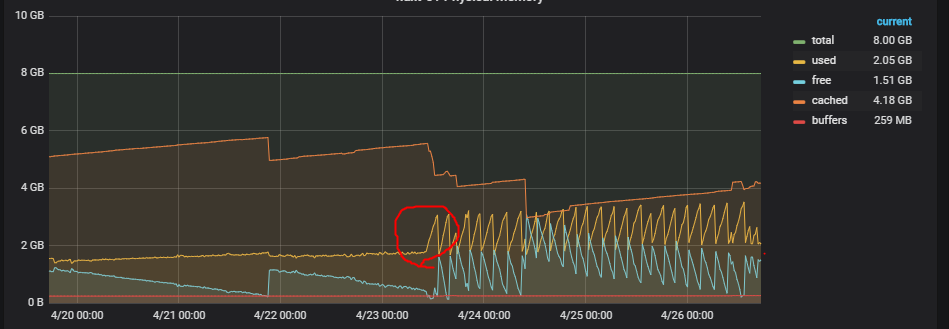
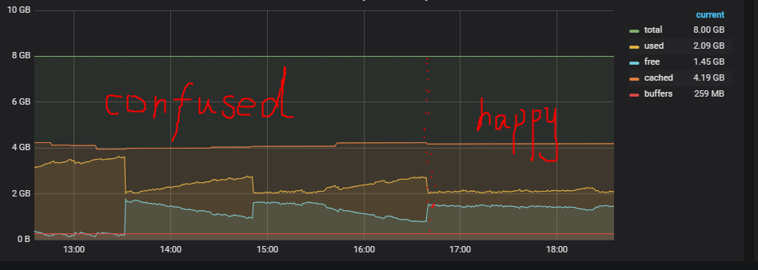

<!DOCTYPE html>
<html>
<head><meta name="generator" content="Hexo 3.9.0">
  <meta charset="utf-8">
  
  <title>Larix&#39;s blog</title>
  <meta name="viewport" content="width=device-width, initial-scale=1, maximum-scale=1">
  <meta property="og:type" content="website">
<meta property="og:title" content="Larix&#39;s blog">
<meta property="og:url" content="http://larixs.github.io/index.html">
<meta property="og:site_name" content="Larix&#39;s blog">
<meta property="og:locale" content="zh-cn">
<meta name="twitter:card" content="summary">
<meta name="twitter:title" content="Larix&#39;s blog">
  
    <link rel="alternate" href="/atom.xml" title="Larix&#39;s blog" type="application/atom+xml">
  
  
    <link rel="icon" href="/favicon.png">
  
  
    <link href="//fonts.googleapis.com/css?family=Source+Code+Pro" rel="stylesheet" type="text/css">
  
  <link rel="stylesheet" href="/css/style.css">
  

</head>
</html>
<body>
  <div id="container">
    <div id="wrap">
      <header id="header">
  <div id="banner"></div>
  <div id="header-outer" class="outer">
    <div id="header-title" class="inner">
      <h1 id="logo-wrap">
        <a href="/" id="logo">Larix&#39;s blog</a>
      </h1>
      
        <h2 id="subtitle-wrap">
          <a href="/" id="subtitle">world is more wider than what is in your eyes.</a>
        </h2>
      
    </div>
    <div id="header-inner" class="inner">
      <nav id="main-nav">
        <a id="main-nav-toggle" class="nav-icon"></a>
        
          <a class="main-nav-link" href="/">Home</a>
        
          <a class="main-nav-link" href="/archives">Archives</a>
        
      </nav>
      <nav id="sub-nav">
        
          <a id="nav-rss-link" class="nav-icon" href="/atom.xml" title="RSS Feed"></a>
        
        <a id="nav-search-btn" class="nav-icon" title="Search"></a>
      </nav>
      <div id="search-form-wrap">
        <form action="//google.com/search" method="get" accept-charset="UTF-8" class="search-form"><input type="search" name="q" class="search-form-input" placeholder="Search"><button type="submit" class="search-form-submit">&#xF002;</button><input type="hidden" name="sitesearch" value="http://larixs.github.io"></form>
      </div>
    </div>
  </div>
</header>
      <div class="outer">
        <section id="main">
  
    <article id="post-react/Q&amp;A" class="article article-type-post" itemscope itemprop="blogPost">
  <div class="article-meta">
    <a href="/2019/11/04/react/Q&A/" class="article-date">
  <time datetime="2019-11-04T02:43:45.441Z" itemprop="datePublished">2019-11-04</time>
</a>
    
  </div>
  <div class="article-inner">
    
    
    <div class="article-entry" itemprop="articleBody">
      
        <h1 id="react学习的Q-amp-A"><a href="#react学习的Q-amp-A" class="headerlink" title="react学习的Q&amp;A"></a>react学习的Q&amp;A</h1><p>此篇Q&amp;A仅为我本人关于reactjs学习的自问自答，不涉及其他react的衍生库。Answer可能有错处，所以每次看的时候需勤加思考。</p>
<h2 id="高级指引"><a href="#高级指引" class="headerlink" title="高级指引"></a>高级指引</h2><h3 id="为什么使用forwardRef向下传递ref，而不是直接作为props传给子组件？"><a href="#为什么使用forwardRef向下传递ref，而不是直接作为props传给子组件？" class="headerlink" title="为什么使用forwardRef向下传递ref，而不是直接作为props传给子组件？"></a>为什么使用forwardRef向下传递ref，而不是直接作为props传给子组件？</h3><p>常规函数和class组件不会将ref且props的参数，类似的还有key。forwardRef方法可以收到ref参数，然后将它重命名作为props参数传到被包裹的组件上。（那这个和直接将ref重命名传入被包裹的组件有什么区别吗？forwardRef能想到的优点就是使用者可以直接用ref，更符合直觉，而不用记住并使用重命名，重命名的过程交给组件的维护者。）</p>
<h2 id="HOOk"><a href="#HOOk" class="headerlink" title="HOOk"></a>HOOk</h2><h3 id="react为什么设计了HOOK？"><a href="#react为什么设计了HOOK？" class="headerlink" title="react为什么设计了HOOK？"></a>react为什么设计了HOOK？</h3><ul>
<li>相关联的函数被迫拆分到各生命钩子里完成，例如监听器的设置和清除，不够清晰。</li>
<li>class的写法不够友好，状态逻辑难以复用</li>
</ul>
<p>参考： <a href="https://juejin.im/post/5dbbdbd5f265da4d4b5fe57d" target="_blank" rel="noopener">React Hooks 详解（近 1w 字）+ 项目实战</a></p>
<h3 id="读取state时，其值为何被固定在它被创建的那次渲染中？"><a href="#读取state时，其值为何被固定在它被创建的那次渲染中？" class="headerlink" title="读取state时，其值为何被固定在它被创建的那次渲染中？"></a>读取state时，其值为何被固定在它被创建的那次渲染中？</h3><p>官方hooks的FAQ中提到一个问题，<a href="https://zh-hans.reactjs.org/docs/hooks-faq.html#why-am-i-seeing-stale-props-or-state-inside-my-function" target="_blank" rel="noopener">为什么我会在我的函数中看到陈旧的 props 和 state ？</a>。我不太理解props为何会看到陈旧的，只能归为是父组件的state是陈旧的，这个state作为子组件的props，导致子组件的props是陈旧的。这样的话，其实只有一个问题，就是state是陈旧的。</p>
<p>官方解释中提到一句，<b>组件内部的任何函数，包括事件处理函数和 effect，都是从它被创建的那次渲染中被「看到」的</b>。没有看过react源码，只是根据<a href="https://zh-hans.reactjs.org/docs/hooks-faq.html#how-does-react-associate-hook-calls-with-components" target="_blank" rel="noopener">官网给出的概念</a>来理解useState的原理。在初始时，useState创建一个变量存到react的”记忆单元格”里，每次更新时，如果已经有这个变量，则返回一个此变量的复制（值类型复制值，对象类型进行一次深拷贝?）值，否则进行初始化。react的hook组件就是一个函数，每次更新的时候都会重新执行一遍，内部定义的回调函数或者异步函数会重新创建一份，由于js的闭包性质，导致这些函数使用的都是此时的state值，不会因为后续state的更改而影响函数所使用的值。</p>
<h3 id="为什么用useState来保存需要渲染的变量，而不是useRef"><a href="#为什么用useState来保存需要渲染的变量，而不是useRef" class="headerlink" title="为什么用useState来保存需要渲染的变量，而不是useRef?"></a>为什么用useState来保存需要渲染的变量，而不是useRef?</h3><p>经测试，useRef每次返回的都是同一个对象，当current改变时，不会触发组件的更新。使用useState是因为返回的值里有重新设置值的函数，当state值改变时，使用那个函数重新赋值会触发视图的重新更新。</p>
<h3 id="如何既使用connect-又使用React-forwardRef来包装组件？"><a href="#如何既使用connect-又使用React-forwardRef来包装组件？" class="headerlink" title="如何既使用connect,又使用React.forwardRef来包装组件？"></a>如何既使用connect,又使用React.forwardRef来包装组件？</h3><pre><code>function Components({forwardRef, ...restProps}){
    /**
    *   组件实现细节
    */
    return (
        &lt;div ref={forwardRef}&gt;
            {/*具体实现*/}
        &lt;/div&gt;
    )
}

const ConnectedComponents = connect()(Components)
export default React.forwardRef((props, ref)=&gt;{
    return &lt;ConnectedComponents {...props} forwardRef={ref} /&gt;
});
</code></pre>
      
    </div>
    <footer class="article-footer">
      <a data-url="http://larixs.github.io/2019/11/04/react/Q&A/" data-id="ck2jtvp27002eqvg93z0tv7hz" class="article-share-link">Share</a>
      
      
    </footer>
  </div>
  
</article>


  
    <article id="post-other/have-a-taste" class="article article-type-post" itemscope itemprop="blogPost">
  <div class="article-meta">
    <a href="/2019/11/01/other/have-a-taste/" class="article-date">
  <time datetime="2019-11-01T08:42:55.472Z" itemprop="datePublished">2019-11-01</time>
</a>
    
  <div class="article-category">
    <a class="article-category-link" href="/categories/other/">other</a>
  </div>

  </div>
  <div class="article-inner">
    
    
      <header class="article-header">
        
  
    <h1 itemprop="name">
      <a class="article-title" href="/2019/11/01/other/have-a-taste/">技术尝鲜</a>
    </h1>
  

      </header>
    
    <div class="article-entry" itemprop="articleBody">
      
        <p>提及的库，大多没有深入使用过，仅做尝鲜记录。</p>
<h2 id="拖拽库"><a href="#拖拽库" class="headerlink" title="拖拽库"></a>拖拽库</h2><h3 id="DnD-Drag-and-Drop-react"><a href="#DnD-Drag-and-Drop-react" class="headerlink" title="DnD(Drag and Drop) + react"></a>DnD(Drag and Drop) + react</h3><p>能力方面：<br>将drag和drop变为了一个抽象的对象，而不是对dom进行直接操作。拖拽表现主要基于<a href="https://developer.mozilla.org/en-US/docs/Web/API/HTML_Drag_and_Drop_API" target="_blank" rel="noopener">HTML5 drag and drop API</a>。 由于拖拽表现基于原生实现，使拖拽表现更流畅，但其兼容性也受限于浏览器的api实现情况。也可以搭配第三方库的拖拽事件使用。使用核心在于理解items,types,monitors,connectors,drag source, drop target的概念以及他们之间的关系。</p>
<p>文档方面：<br>文档结构清晰，通过实例讲解各核心概念的运用，方便理解。文档没有中文版本。</p>
<h2 id="表单库"><a href="#表单库" class="headerlink" title="表单库"></a>表单库</h2><h3 id="formik-react"><a href="#formik-react" class="headerlink" title="formik + react"></a>formik + react</h3><p>能力方面：<br>formik主要是负责收集表单数据以及校验，表单的生成和联动是不在负责范围内的。因为负责的功能单一，所以灵活性高，容易debug，但配置也比较繁琐。因此formik和其他第三方库配合使用更佳，例如校验使用Yup（formik官方推荐），组件库使用antd。formik支持使用相应hook的自定义组件。</p>
<p>文档方面：<br>文档通俗易懂，由不带sugar的使用方法，一步一步变为带sugar的使用方法，既简单介绍了原理，又讲明白了sugar的用法，思路清晰流畅，赞一个。唯一美中不足的是：文档没有中文版本，英语不好的人读起来有些头大。</p>
<h3 id="uform-react-antd"><a href="#uform-react-antd" class="headerlink" title="uform + react + antd"></a>uform + react + antd</h3><p>能力方面：<br>uform有两种生成表单的方式，一种是普通的组件构建，另一种是通过JSON Schema来生成表单。uform也接管了表单值收集、校验、联动等功能。内置第三方库的相关组件（例如antd)，也支持自定义组件(只要满足约定的值回传方式)。uform接管的事情比较多，上手方便快捷，但相对来说灵活性低一些，如果出了bug也不好寻找。</p>
<p>文档方面：<br>文档结构有些零乱，有些操作方法甚至只在示例里使用。</p>
<h2 id="图表库"><a href="#图表库" class="headerlink" title="图表库"></a>图表库</h2><h3 id="D3-js"><a href="#D3-js" class="headerlink" title="D3.js"></a>D3.js</h3><p>能力方面：<br>支持svg和canvas两种绘图方式。<br>库主要提供图表元件的操作api或者一些计算api，例如关于轴设置的api、关于力学导图的api。由各种各样的api自由组合成图表，自由度极高，适合各类自定义图表。</p>
<p>文档方面：<br>只有每个api的介绍文档，如何使用靠参考示例或者全靠自己发挥。文档像一本字典，会告诉你现在有哪些字，每个字怎么读、怎么写、是什么意思，但不会教你整篇文章怎么写。没有官方中文文档，民间中文文档更新滞后、质量不高（目前落后整整一个大版本）。</p>
<h3 id="Highcharts"><a href="#Highcharts" class="headerlink" title="Highcharts"></a>Highcharts</h3><p>能力方面：仅svg绘图。主要以提供配置项的方式生成图表。配置项结构清晰。由于是svg绘图，在定制样式的时候，除了库提供的配置，还是可以通过寻找对应svg元素来改变样式。</p>
<p>文档方面：文档结构清晰，易于搜索。部分配置项还提供在线示例，方便理解和试用，这点非常赞。</p>
<p>另：某些延伸版本是需要收费的（例如Highstocks）?</p>
<h3 id="ECharts"><a href="#ECharts" class="headerlink" title="ECharts"></a>ECharts</h3><p>能力方面：仅canvas绘图。主要以提供配置项的方式生成图表。由于是canvas绘图，在定制样式方面，除了库提供的配置，没有办法修改样式。在使用过程中还发现了一些bug，例如想生成一个（不同类型数据）重叠的柱状图，在特定窗口大小下，本应该重叠的柱子会发生错位。</p>
<p>文档方面：文档结构清晰，配置项并没有按照字母顺序排列，但是有提供搜索功能。可能是文档更新不及时的缘故，某些配置项并没有按照文档描述那样运行。</p>

      
    </div>
    <footer class="article-footer">
      <a data-url="http://larixs.github.io/2019/11/01/other/have-a-taste/" data-id="ck2jtvp26002bqvg91hxhsl75" class="article-share-link">Share</a>
      
      
    </footer>
  </div>
  
</article>


  
    <article id="post-other/study-reg" class="article article-type-post" itemscope itemprop="blogPost">
  <div class="article-meta">
    <a href="/2019/10/10/other/study-reg/" class="article-date">
  <time datetime="2019-10-10T02:16:55.774Z" itemprop="datePublished">2019-10-10</time>
</a>
    
  <div class="article-category">
    <a class="article-category-link" href="/categories/other/">other</a>
  </div>

  </div>
  <div class="article-inner">
    
    
      <header class="article-header">
        
  
    <h1 itemprop="name">
      <a class="article-title" href="/2019/10/10/other/study-reg/">正则表达式学习笔记</a>
    </h1>
  

      </header>
    
    <div class="article-entry" itemprop="articleBody">
      
        <h2 id="1-对某个字符进行匹配"><a href="#1-对某个字符进行匹配" class="headerlink" title="1.对某个字符进行匹配"></a>1.对某个字符进行匹配</h2><p><strong> 按匹配范围进行分类 </strong></p>
<ul>
<li><p>普通字符（如a）：普通字符本身（a）</p>
</li>
<li><p>特殊字符（如. 和 \）: \特殊字符 （如 \ . 和 \ \ , -(连字符) 字符不需要被转译）</p>
</li>
<li><p>空白字符(非打印字符):</p>
<ul>
<li>\f : 换页符</li>
<li>\n : 换行符</li>
</ul>
</li>
<li><p>多个字符中的一个</p>
<ul>
<li>字符集(如匹配a或者s或者d) : [asd]</li>
<li><p>字符集合区间(如匹配数字0~9) :</p>
<p>  [0-9]  //完全等同于[0123456789]</p>
<p>  [A-Z]</p>
<p>  [a-z]</p>
<p>  [A-z] //匹配ASCII字符A到z的所有字母,不常用,包含[、^等其他字符</p>
</li>
<li><p>多个字符区间：</p>
<p>  [A-Za-z0-9]</p>
</li>
<li><p>匹配特定类别：</p>
<p>  \d:任何一个数字</p>
<p>  \D:任何一个非（数字）</p>
<p>  \w:字母、数字、下划线</p>
<p>  \W: 非（字母、数字、下划线）</p>
<p>  \s:空白字符</p>
<p>  \S:非空白字符</p>
</li>
</ul>
</li>
<li>取非匹配: [^0-9] //匹配不上数字的字符</li>
<li>匹配除换行符之外的任何单个字符：.</li>
<li><p>或操作符 |。 ‘x|y’匹配’x’或者’y’。</p>
<p>  例如：</p>
<p>  <code>/green|red/ //匹配“green apple”中的‘green’和“red apple”中的‘red’</code><br>  <code>/gree(n|r)ed/ //匹配&#39;greened&#39;或&#39;greered&#39;</code></p>
</li>
</ul>
<h2 id="2-对字符进行重复匹配"><a href="#2-对字符进行重复匹配" class="headerlink" title="2.对字符进行重复匹配"></a>2.对字符进行重复匹配</h2><ul>
<li><p>匹配一个或多个字符： +</p>
<p>  例子：</p>
<p>  a+  //匹配一个或连续多个a</p>
<p>  \w+ //匹配一个或连续多个字母数字字符</p>
<p>  [0-9]+ //匹配一个或多个数字</p>
</li>
<li><p>匹配零个或多个字符： *</p>
<p>  用法和 + 完全一样。</p>
</li>
<li><p>匹配零个或一个字符 ： ？<br>  用法同上。</p>
</li>
<li><p>指定重复的次数</p>
<ul>
<li>精确的值 [0-9]{6}  //重复出现六个数字</li>
<li>闭合区间 \d{2,4} //数字最多重复4次，最少重复两次</li>
<li>半开半闭区间 \d{3,} //至少重复3次</li>
</ul>
</li>
<li><p>懒惰型元字符</p>
<p>  这是个非常有意思的概念。*，+都是尽可能多的匹配，但是存在一种情况是需要尽可能少的匹配，因此引入懒惰型元字符的概念。懒惰型元字符就是匹配尽可能少的字符。</p>
</li>
</ul>
<table>
<thead>
<tr>
<th>贪婪型元字符</th>
<th>懒惰型元字符</th>
</tr>
</thead>
<tbody>
<tr>
<td>*</td>
<td>*?</td>
</tr>
<tr>
<td>+</td>
<td>+?</td>
</tr>
<tr>
<td>{n,}</td>
<td>{n,}?</td>
</tr>
</tbody>
</table>
<h2 id="3-位置匹配"><a href="#3-位置匹配" class="headerlink" title="3. 位置匹配"></a>3. 位置匹配</h2><ul>
<li><p>单词 边界： \b   //用于匹配一个单词的开始或者结尾</p>
<p>  \bcat\b  //只匹配cat单词</p>
<p>  \bcat //匹配以cat开头的单词</p>
<p>  cat\b  //匹配以cat结尾的单词</p>
</li>
<li><p>非单词 边界： \B //匹配前或后不是单词边界的符号</p>
<p>  \B-\B  //匹配color - coded ，不匹配 nine-digit</p>
</li>
<li><p>字符串边界： ^ （字符串开头） $ （字符串结尾）</p>
</li>
<li><p>分行匹配模式： (?m) //将行分隔符当做字符串分隔符对待，因此^ $还会匹配行分隔符</p>
</li>
</ul>
<h2 id="4-子表达式"><a href="#4-子表达式" class="headerlink" title="4.子表达式"></a>4.子表达式</h2><h3 id="捕获括号"><a href="#捕获括号" class="headerlink" title="捕获括号"></a>捕获括号</h3><p>把一个子表达式当做一个独立的元素使用。子表达式需用（）(称为捕获括号)括起来。</p>
<p>例子：</p>
<p><code>(\d{1,3}\.){3}\d{1,3}  // 子表达式\d{1,3}\.重复三次，可以匹配ip地址如10.125.19.211</code></p>
<p><code>(19|20)\d{2} // 匹配19或者20开始的四位数</code></p>
<h3 id="非捕获括号-x"><a href="#非捕获括号-x" class="headerlink" title="非捕获括号 (?:x)"></a>非捕获括号 (?:x)</h3><p>匹配’x’但是不记住匹配项。</p>
<pre><code>const reg1 = /(?:foo)/;
const reg2 = /(foo)/;
const str = &apos;foo&apos;;
str.replace(reg1, &apos;$1&apos;) // &apos;$1&apos; 捕获但是没有记住，所以$1没有值
str.replace(reg2, &apos;$1&apos;) // &apos;foo&apos; 捕获并且记住，所以$1有值
</code></pre><h2 id="5-回溯引用"><a href="#5-回溯引用" class="headerlink" title="5.回溯引用"></a>5.回溯引用</h2><p>回溯引用多用来替换字符串。<del>不知道这在js里怎么写。</del></p>
<p>看了书之后，发现回溯引用就是将子表达式化作变量，按照出现顺序通过 \1 \2 … 进行调用，同一子表达式匹配出的字符串应该是一样的，比如子表达式1匹配到了sat,则后续\1处的调用也必须匹配sat。</p>
<p>例子：</p>
<p><code>/(foo) (bar) \1 \2/  // 这个正则表达式能匹配上&quot;foo bar foo bar&quot;，用两个括号分别记住前两个单词，再用\1 \2表示匹配和捕获1(在此是&#39;foo&#39;)、捕获2(在此是&#39;bar&#39;)一样的字符串。 \1 \2用于正则表达式的匹配环节，$1 $2用于正则表达式的替换环节。</code></p>
<h2 id="6-断言"><a href="#6-断言" class="headerlink" title="6.断言"></a>6.断言</h2><h3 id="先行断言-x-y"><a href="#先行断言-x-y" class="headerlink" title="先行断言 x(?=y)"></a>先行断言 x(?=y)</h3><p>匹配’x’，仅当’x’后面跟着’y’。这叫先行断言。</p>
<p>例子：</p>
<p><code>/Jack(?=Sprat|Frost)/  // 匹配‘Jack’仅仅当它后面跟着&#39;Sprat&#39;或者是‘Frost’。但是‘Sprat’和‘Frost’都不是匹配结果的一部分。</code></p>
<h3 id="后行断言-lt-y-x"><a href="#后行断言-lt-y-x" class="headerlink" title="后行断言 (?&lt;=y)x"></a>后行断言 (?&lt;=y)x</h3><p>匹配’x’，仅当’x’前面是’y’。这叫后行断言。</p>
<p><code>/(?&lt;=Jack|Tom)Sprat/  // 匹配‘ Sprat ’仅仅当它前面是&#39;Jack&#39;或者是‘Tom’。但是‘Jack’和‘Tom’都不是匹配结果的一部分。</code></p>
<h3 id="反向-先行断言-x-y"><a href="#反向-先行断言-x-y" class="headerlink" title="反向(?)先行断言 x(?!y)"></a>反向(?)先行断言 x(?!y)</h3><p>匹配’x’,仅当’x’后面是’y’</p>
<h3 id="反向-后行断言-lt-y-x"><a href="#反向-后行断言-lt-y-x" class="headerlink" title="反向(?)后行断言 (?&lt;!y)x"></a>反向(?)后行断言 (?&lt;!y)x</h3><p>匹配’x’,仅当’x’前面不是’y’</p>
<h3 id="7-正则表达式小书上还有些东西，没用过也没看过"><a href="#7-正则表达式小书上还有些东西，没用过也没看过" class="headerlink" title="7. 正则表达式小书上还有些东西，没用过也没看过"></a>7. 正则表达式小书上还有些东西，没用过也没看过</h3><p>等真正需要的时候再学吧，不然又忘了</p>
<h2 id="参考链接："><a href="#参考链接：" class="headerlink" title="参考链接："></a>参考链接：</h2><ol>
<li><a href="https://developer.mozilla.org/zh-CN/docs/Web/JavaScript/Guide/Regular_Expressions" target="_blank" rel="noopener">正则表达式-javascript|mdn</a></li>
</ol>

      
    </div>
    <footer class="article-footer">
      <a data-url="http://larixs.github.io/2019/10/10/other/study-reg/" data-id="ck2jtvp2a002jqvg9fza2ev6u" class="article-share-link">Share</a>
      
      
  <ul class="article-tag-list"><li class="article-tag-list-item"><a class="article-tag-list-link" href="/tags/reg/">reg</a></li><li class="article-tag-list-item"><a class="article-tag-list-link" href="/tags/study-notes/">study notes</a></li></ul>

    </footer>
  </div>
  
</article>


  
    <article id="post-articles/article" class="article article-type-post" itemscope itemprop="blogPost">
  <div class="article-meta">
    <a href="/2019/09/03/articles/article/" class="article-date">
  <time datetime="2019-09-03T03:45:09.717Z" itemprop="datePublished">2019-09-03</time>
</a>
    
  </div>
  <div class="article-inner">
    
    
    <div class="article-entry" itemprop="articleBody">
      
        <h2 id="博文记录"><a href="#博文记录" class="headerlink" title="博文记录"></a>博文记录</h2><ul>
<li><p><a href="https://jinlong.github.io/2016/04/24/Debouncing-and-Throttling-Explained-Through-Examples/" target="_blank" rel="noopener">实例解析防抖动（Debouncing）和节流阀（Throttling）</a></p>
<p> debounce: 连续（即两次触发间隔较短）多次（任意多次）触发同一事件，只执行一次函数。可最先执行，也可最后执行。</p>
<p> throttle: 一段时间内，如果有多次事件触发，只执行一次函数。</p>
<p> throttle与debounce的区别： throttle有时间段的限制，假如连续触发次数够多、连续时间够长，那debounce只会执行一次函数，throttle会执行多次。</p>
</li>
</ul>
<ul>
<li><p><a href="http://lodash.think2011.net/custom-builds" target="_blank" rel="noopener">定制lodash</a></p>
<p>  步骤： 安装lodash-cli -&gt; 通过lodash的不同命令定制lodash.js。</p>
</li>
<li><p><a href="https://juejin.im/post/5bd07157f265da0ad221cd19" target="_blank" rel="noopener">使用CSS自定义属性构建骨架屏</a></p>
<p>  骨架屏的实现方案之一： css (background-image + 自定义变量) 或考虑(:empty选择器 + 伪元素)。</p>
</li>
<li><p><a href="https://juejin.im/post/5bd052aff265da0a857ab850" target="_blank" rel="noopener">前端组件设计–位运算的妙用</a></p>
<p>  组件的解耦设计与巧用位运算表示多项选择（只有是或否两种选择，这样才可以用二进制的位运算）结果。</p>
</li>
<li><p><a href="https://zhuanlan.zhihu.com/p/45111890" target="_blank" rel="noopener">深入浏览器的事件循环 (GDD@2018)</a></p>
<p>  macrotask(如setTimeout), requestAnimationFrame, microtask(如Promise.then)的执行流程。</p>
</li>
<li><p><a href="https://juejin.im/post/5bdbb3406fb9a022752c319e" target="_blank" rel="noopener">ES6的Symbol竟然那么强大，面试中的加分点啊</a></p>
<p><a href="https://developer.mozilla.org/en-US/docs/Web/JavaScript/Reference/Global_Objects/Symbol/toPrimitive" target="_blank" rel="noopener">Symbol.toPrimitive–mdn</a></p>
<p>  symbol： 通过Symbol.for创建的symbol会进入全局注册表，每次创建之前会先去表里查找；对象可以修改其[Symbol.toPrimitive]来修改获取其值的函数，有点类似于修改valueOf和toString(通过hint值判断需要转换的类型)。</p>
</li>
<li><p><a href="https://github.com/ProtoTeam/blog/blob/master/201709/3.md" target="_blank" rel="noopener">跨页面通信</a></p>
<p>  页面间通信:</p>
<p>  1、 window.open(搭配postMessage) / iframe 通信,</p>
<p>  2、 localStorage(浏览器，同域名同端口）。</p>
<p>  3、 sessionStorage(浏览器，同域名同端口同一会话）。从当前页面新开(window.open)的页面，会copy一份当前页面的sessionStorage，但父子页面之间sessionStorage变化不互通。</p>
<p>  4、 cookie。不推荐使用，因为会弄脏cookie数据并且每次发送请求时有多余的内容。</p>
<p>  5、 <a href="https://developer.mozilla.org/en-US/docs/Web/API/BroadcastChannel/BroadcastChannel" target="_blank" rel="noopener">BroadcastChannel</a>。与localStorage类似，生命周期更短，但<a href="https://developer.mozilla.org/en-US/docs/Web/API/BroadcastChannel/BroadcastChannel#Browser_compatibility" target="_blank" rel="noopener">兼容性</a>更差。</p>
<p>  6、 <a href="https://developer.mozilla.org/en-US/search?q=SharedWorker" target="_blank" rel="noopener">SharedWorker</a>。不是专门用来通信的，但也可以实现跨页面通信。</p>
<p>  7、 server。 tab被激活时请求服务器端数据；Websocket。</p>
</li>
<li><p><a href="http://taobaofed.org/blog/2018/10/31/a-tag/" target="_blank" rel="noopener">WebComponent和Polymer</a></p>
</li>
<li><p><a href="http://taobaofed.org/blog/2016/01/14/nodejs-memory-leak-analyze/" target="_blank" rel="noopener">记一次 Node.js 应用内存暴涨分析</a></p>
<p>  zelda-nuxt本地测试环境日益卡顿，竟然卡到我还没动手它就自己崩溃了。并不知道是为何导致的node内存泄漏，因为框架被包装太多层了：nuxt -&gt; backpack -&gt; webpack -&gt; …。没有太多时间去探究zelda-nuxt的病因，只能先简单粗暴地在node_modules/.bin的backpack执行程序中增大了node的最大内存。</p>
<p>  zelda-nuxt的崩溃，个人猜测是日益增多的业务代码导致测试环境的热更新占用越来越多的内存而导致的崩溃。不过这与我对热更新的印象不符，热更新不应该是每次只更新一部分代码，与总代码量无关吗？（只是瞎猜，还没实际去研究热更新机制）</p>
<p>  这篇文章提到了一种可能导致内存泄漏的原因：使用vm（virtual machine)时重复创建了释放速度很慢的变量，占用大量内存导致node程序崩溃。</p>
<p>  第一次读这种node和v8知识点比较多的文章，质量对我这种小白来说挺不错的。</p>
</li>
<li><p><a href="https://github.com/livoras/blog/issues/13" target="_blank" rel="noopener">深度剖析：如何实现一个 Virtual DOM 算法</a></p>
<p>  简单介绍了一下虚拟DOM的实现：用js对象模拟DOM树 -&gt; 发生变化时找出差异 -&gt; 差异更新到真实DOM树上。</p>
<p>  其中差异对比算法类似于最小编辑距离（动态规划问题，时间复杂度O(m*n)），但做了相应的优化，让算法时间复杂度降到O(max(m,n))。具体实现在相关链接<a href="https://zhuanlan.zhihu.com/p/27437595" target="_blank" rel="noopener">合格前端系列第五弹-Virtual Dom &amp;&amp; Diff</a>里有提到。</p>
</li>
<li><p><a href="http://www.ruanyifeng.com/blog/2016/04/cors.html" target="_blank" rel="noopener">跨域资源共享 CORS 详解</a></p>
<p>  介绍了一些跨域资源共享（Cross-origin resource sharing）里常用的头信息。</p>
</li>
<li><p>REST(REpresentational State Transfer), 表现层状态转移</p>
<p>  REST是一种设计风格，可以用来设计api的名称等。简单来说：</p>
<p>  URL里原则上只使用名词表示资源所属位置，用HTTP（GET,POST,DELETE,DETC,PATCH）方法去描述操作。并且使用HTTP Status Code传递Server的状态信息，例如200为成功，500为Server内部错误。</p>
<p>  例如：</p>
<pre><code>GET /v1/zoos: v1版本,列出所有动物园
POST /v2/zoos  v2版本，新建一个动物园
DELETE /v2/zoos v2版本，删除一个动物园
</code></pre><p>  优点：</p>
<ul>
<li>提供一套统一的接口为不同端(web，ios，android, …)提供相同的服务。</li>
<li><p>URL语义化，能快速了解api作用。</p>
<p>缺点：</p>
</li>
<li><p>批量删除？</p>
</li>
<li><p>http动词太少</p>
<p>相关引申：</p>
</li>
<li><p>RESTful api的一种特点： HATEOAS, Hypermedia as the engine of application state, 超媒体即应用状态引擎。返回结果中除了得到资源本身以外，还附带连向其他api的地址（具有连通性），使得用户不用查文档也知道下一步应该做什么。<a href="https://api.github.com/" target="_blank" rel="noopener">github示例</a></p>
</li>
</ul>
</li>
</ul>
<pre><code>可以用到前端路由设计里来吗？

参考：
    - [怎样用通俗的语言解释REST，以及RESTful？](https://www.zhihu.com/question/28557115)
    - [RESTful API 设计指南](http://www.ruanyifeng.com/blog/2014/05/restful_api.html)
    - [不要被名字吓到-RESTful、HATEOAS、Spring boot之整合](https://www.jianshu.com/p/65b9e54dee7d)
</code></pre><ul>
<li><p>DOM的attribute和property</p>
<p>  简单来说，DOM作为js对象在生成的时候就会存在的属性是property，其他的成为就是attribute(也称特性)。</p>
<p>  property可以通过DOM节点直接访问，它是js对象(DOM在js中就是一个对象)的一个属性值。attribute放在了DOM对象的attributes里，也可以通过API getAttribute去访问。</p>
<p> 以<code>&lt;input id=&quot;the-input&quot; type=&quot;foo&quot; value=&quot;Name:&quot;&gt;</code>为例子，文章提到了property对于attribute的映射关系：</p>
<ul>
<li>pure reflected: 对property的操作都会反映到attribute。读写property就是读写attribute。例如id。</li>
<li>not pure reflected: property是有限制的值，例如是枚举值。写入property会如实写入attribute，但是property自身会做相应的处理，导致读取property和读取attribute的值是不一样的。例如type=”foo”, 读取attribute为”foo”，但是读取property是”text”。</li>
<li>does not reflected: 完全不存在映射关系。例如input的value， 假设输入框后来输入了”test”，这时读取property的value是”test”,但是attribute的value还是写在DOM上的”Name:”。无论input输入什么值，property的value都不会影响attribute的value。但是如果修改attribute的value就会写入property的value。</li>
<li><p>以上都是同名的情况。也存在非同名的property、attribute有映射关系。例如property的className和attribute的class就是pure reflected。</p>
<p>参考：</p>
<ul>
<li><a href="https://stackoverflow.com/questions/6003819/what-is-the-difference-between-properties-and-attributes-in-html#answer-6004028" target="_blank" rel="noopener">What is the difference between properties and attributes in HTML?</a></li>
<li><a href="https://www.cnblogs.com/elcarim5efil/p/4698980.html" target="_blank" rel="noopener">DOM 中 Property 和 Attribute 的区别</a></li>
<li><a href="https://www.zhihu.com/question/30111950" target="_blank" rel="noopener">attribute和property在英语里有什么区别?</a></li>
</ul>
</li>
</ul>
</li>
<li><p><a href="https://developer.mozilla.org/zh-CN/docs/Web/JavaScript/Reference/template_strings#%E5%B8%A6%E6%A0%87%E7%AD%BE%E7%9A%84%E6%A8%A1%E6%9D%BF%E5%AD%97%E7%AC%A6%E4%B8%B2" target="_blank" rel="noopener">带标签的模板字符串</a></p>
<pre><code>function myFun(strings, p1, p2){
    console.log(strings); // [&apos;this is a &apos;, &apos; test &apos;, &apos;&apos;]
    console.log(p1); // &apos;interesting&apos;
    console.log(p2); // &apos;!&apos;
    return &apos;hello world&apos; + p2;
}
const p1 = &apos;interesting&apos;, p2 = &apos;!&apos;;
console.log(myFun`this is a ${p1} test ${p2}`) // &apos;hello world!&apos;
</code></pre><p>  标签函数可以用来处理模板字符串。不然我还真不知道该怎么去取模板字符串的各部分。</p>
</li>
<li><p><a href="https://developers.google.com/web/fundamentals/" target="_blank" rel="noopener">谷歌开发者文档</a></p>
</li>
</ul>
<p>看帖子看到的，之前都没有了解过这个文档。涉及的优化知识挺多的，应该仔细阅读一下。</p>
<ul>
<li><p><a href="https://juejin.im/post/5cfe4e8a6fb9a07ec63b09a4" target="_blank" rel="noopener">富文本原理了解一下?</a></p>
</li>
<li><p><a href="https://juejin.im/post/5b7efb2ee51d45388b6af96c#heading-18" target="_blank" rel="noopener">H5唤起APP指南(附开源唤端库)</a></p>
</li>
</ul>
<p>检查是否成功唤起</p>
<pre><code>&lt;template&gt;
  &lt;div&gt;
    &lt;a @click.prevent=&quot;testApp(&apos;weixin://&apos;)&quot; class=&quot;dl-btn&quot; id=&quot;download&quot;&gt;打开微信&lt;/a&gt;
  &lt;/div&gt;
&lt;/template&gt;

&lt;script&gt;
import { Toast } from &apos;baseComponents&apos;;

export default {
  data() {
    return {
      timer: 0
    };
  },
  methods: {
    testApp(url) {
      document.addEventListener(
        &apos;visibilitychange&apos;,
        this.visibilityChangeHandler,
        false
      );
      this.timer = setTimeout(() =&gt; {
        if (!document.hidden) {
          Toast(&apos;唤醒微信超时，请检查是否已安装微信&apos;);
        }
      }, 2000);
      window.location.href = url;
    },
    visibilityChangeHandler() {
      if (document.visibilityState === &apos;visible&apos;) {
        clearTimeout(this.timer);
        document.removeEventListener(
          &apos;visibilitychange&apos;,
          this.visibilityChangeHandler,
          false
        );
      }
    }
  }
};
</code></pre><ul>
<li><a href="https://zh-hans.reactjs.org/blog/2016/07/13/mixins-considered-harmful.html" target="_blank" rel="noopener">Mixins Considered Harmful</a></li>
</ul>
<p>为了解决在组件间复用代码的问题，react团队首先推出了mixins来解决这个问题。但是react发布三年后在，情况变了，mixins导致的问题也日渐凸显。文章提出了不同情况下比mixins更优的解决方案。</p>
<ol>
<li>性能优化： 一些性能优化的方式已经有现成的库，不用再自己用mixins写了，例如ShouldComponentUpdate里的浅比较</li>
<li>订阅和副作用：HOC(高阶组件)</li>
<li>相似的渲染逻辑： 提成一个公用组件</li>
<li>上下文：在context稳定之前，建议使用HOC对使用context数据的组件隐藏context的消费行为（将context的使用与子组件解耦）。</li>
<li>公用的工具函数： 提成一个普通的js模块引入</li>
</ol>

      
    </div>
    <footer class="article-footer">
      <a data-url="http://larixs.github.io/2019/09/03/articles/article/" data-id="ck2jtvp1b000sqvg9mt9yxley" class="article-share-link">Share</a>
      
      
    </footer>
  </div>
  
</article>


  
    <article id="post-books/javaScript_design_patterns_and_development_practices" class="article article-type-post" itemscope itemprop="blogPost">
  <div class="article-meta">
    <a href="/2019/08/30/books/javaScript_design_patterns_and_development_practices/" class="article-date">
  <time datetime="2019-08-30T08:25:41.379Z" itemprop="datePublished">2019-08-30</time>
</a>
    
  <div class="article-category">
    <a class="article-category-link" href="/categories/books/">books</a>
  </div>

  </div>
  <div class="article-inner">
    
    
      <header class="article-header">
        
  
    <h1 itemprop="name">
      <a class="article-title" href="/2019/08/30/books/javaScript_design_patterns_and_development_practices/">JavaScript设计模式与开发实践</a>
    </h1>
  

      </header>
    
    <div class="article-entry" itemprop="articleBody">
      
        <h1 id="JavaScript设计模式与开发实践"><a href="#JavaScript设计模式与开发实践" class="headerlink" title="JavaScript设计模式与开发实践"></a>JavaScript设计模式与开发实践</h1><h2 id="面向对象设计的原则"><a href="#面向对象设计的原则" class="headerlink" title="面向对象设计的原则"></a>面向对象设计的原则</h2><h3 id="开放封闭原则"><a href="#开放封闭原则" class="headerlink" title="开放封闭原则"></a>开放封闭原则</h3><h4 id="定义："><a href="#定义：" class="headerlink" title="定义："></a><strong>定义：</strong></h4><p>软件实体（类、模块、函数等）应该可以扩展，但是不可以修改。</p>
<p>即当需求变化时，你可以通过添加新的代码来扩展这个模块的行为，而不去更改那些已经存在的可以工作的代码。</p>
<h4 id="描述："><a href="#描述：" class="headerlink" title="描述："></a><strong>描述：</strong></h4><p>开闭原则主要体现在两个方面：</p>
<ol>
<li><p>它们 “面向扩展开放（Open For Extension）”</p>
<p>意味着有新的需求或变化时，可以对现有代码进行扩展，以适应新的情况。</p>
</li>
<li><p>它们 “面向修改封闭（Closed For Modification）”</p>
<p>模块的源代码是不能被侵犯的，任何人都不允许修改已有源代码。</p>
</li>
</ol>
<p>找出变化的地方：</p>
<ul>
<li>放置挂钩</li>
<li>使用回调函数</li>
</ul>
<h3 id="单一职责原则"><a href="#单一职责原则" class="headerlink" title="单一职责原则"></a>单一职责原则</h3><h4 id="定义：-1"><a href="#定义：-1" class="headerlink" title="定义："></a><strong>定义：</strong></h4><p>单一职责原则（SRP）的原则体现为：一个对象（方法）只做一件事情。</p>
<p><strong>何时应该分离职责：</strong></p>
<p>并不是所有的职责都应该一一分离。</p>
<p>一方面，如果随着需求的变化，有两个职责总是同时变化，那就不必分离他们。</p>
<p>另一方面，职责的变化轴线仅当它们确定会发生变化时才具有意义，即使两个职责已经被耦合到一起，但它们还没有发生改变的征兆，那么也许没有必要主动分离它们，在代码需要重构的时候再分离也不迟。</p>
<p>在实际开发中，因为种种原因违反SRP的情况并不少见，没有必要在任何时候都一成不变地遵守原则。</p>
<p><strong>优缺点</strong></p>
<p>优点：降低了单个类或者对象的复杂度，有助于代码复用和单元测试，解耦做得更好。</p>
<p>缺点：增加编写代码的复杂度，增大对象之间相互联系的难度。</p>
<p><strong>符合原则的设计模式</strong></p>
<p>代理模式、迭代器模式、单例模式、装饰者模式等</p>
<h3 id="最少知识原则"><a href="#最少知识原则" class="headerlink" title="最少知识原则"></a>最少知识原则</h3><h4 id="定义：-2"><a href="#定义：-2" class="headerlink" title="定义："></a><strong>定义：</strong></h4><p>最少知识原则（LKP）说的是一个软件实体应当尽可能少地与其他实体发生相互作用。</p>
<h4 id="描述：-1"><a href="#描述：-1" class="headerlink" title="描述："></a><strong>描述：</strong></h4><p>最小知识原则指的是设计程序时应当尽量减少对象之间的交互。如果两个对象不必彼此直接通信（？什么情况下会必须直接通信），那这两个对象就不要发生直接的链接，可以找个中介来承担通信作用。</p>
<p><strong>符合原则的设计模式</strong></p>
<p>中介者模式(例如vuex的store管理)、外观模式等。</p>
<h3 id="好莱坞原则"><a href="#好莱坞原则" class="headerlink" title="好莱坞原则"></a>好莱坞原则</h3><p>“不要给我们打电话，我们会给你打电话(don‘t call us, we‘ll call you)”这是著名的好莱坞原则。</p>
<p>我们允许底层组件将自己挂钩到高层组件中，而高层组件会决定什么时候、以何种方式去使用这些组件。而底层组件不可以去使用高层组件。</p>
<p><strong>符合原则的设计模式</strong></p>
<p>好莱坞原则有多个适用场景，例如模板方法，发布-订阅模式，回调函数等等。</p>
<h3 id="思考"><a href="#思考" class="headerlink" title="思考"></a>思考</h3><p>在vue里编写组件的时候，与面向对象编程有些类似（？），关注的是组件自身，组件内部封装了一系列相关的数据、逻辑和方法。</p>
<p>在设计组件的时候，组件功能单一是遵循了单一职责原则；组件与其他组件通信时，可能会用到最小知识原则（例如用vuex来传递数据变化）；vue里的插槽设计大约是用了开放封闭原则（？），因为它没有改变原组件，只是在原组件基础上扩展。</p>
<h2 id="第二部分-设计模式"><a href="#第二部分-设计模式" class="headerlink" title="第二部分 设计模式"></a>第二部分 设计模式</h2><h3 id="第四章-单例模式"><a href="#第四章-单例模式" class="headerlink" title="第四章 单例模式"></a>第四章 单例模式</h3><h4 id="单例模式的定义："><a href="#单例模式的定义：" class="headerlink" title="单例模式的定义："></a><strong>单例模式的定义：</strong></h4><p>保证一个类仅有一个实例，并提供一个访问它的全局访问点。</p>
<h4 id="应用："><a href="#应用：" class="headerlink" title="应用："></a><strong>应用：</strong></h4><p>线程池、全局缓存、window对象、登陆浮窗</p>
<h4 id="实现："><a href="#实现：" class="headerlink" title="实现："></a><strong>实现：</strong></h4><p>将单例类的原型提出来作为一个普通的原型，引入代理类来帮助该原型实现单例模式。（透明，代码整洁，原型复用度高）</p>
<h3 id="第五章-策略模式"><a href="#第五章-策略模式" class="headerlink" title="第五章 策略模式"></a>第五章 策略模式</h3><p><strong>策略模式的定义：</strong></p>
<p>定义一系列的算法，把它们一个个封装起来，并且使它们可以很方便地相互替换。</p>
<p><strong>应用：</strong></p>
<p>针对同一种问题，不同类型数据需要有不同解决方案。例如发奖金这个问题，不同绩效的人会有不同的年终奖计算方式。</p>
<p><strong>基本思路：</strong></p>
<p>一个基于策略模式的程序至少由两部分组成。第一个部分是一组策略类，策略类封装了具体的算法，并负责具体的计算过程。第二个部分是环境类Context，它接受客户的请求，随后把请求委托给某一个策略类。要做到这点，说明Context中要维持对某个策略对象的引用。p73</p>
<p>即context负责获取参数和选择策略，而具体的运算过程都交给策略来做。</p>
<p><strong>实现：</strong></p>
<ul>
<li><p>所有策略都是单个的function，context使用if-else挑选策略。（缺点：context庞大，需要包含所有逻辑分支，缺乏弹性，一旦策略有变化，例如策略名称，context和策略可能都要修改）</p>
</li>
<li><p>策略包在一个对象中，context使用属性名挑选策略。或者说，将要选择的策略直接传入context，由context直接调用。（消灭if-else语句，策略的实现方式与context完全解耦）</p>
</li>
</ul>
<p><strong>应用：</strong></p>
<p>表单验证</p>
<h3 id="第六章-代理模式"><a href="#第六章-代理模式" class="headerlink" title="第六章 代理模式"></a>第六章 代理模式</h3><p><strong>代理模式的定义：</strong></p>
<p>为一个对象提供一个代用品或占位符，以便控制对它的访问。</p>
<p><strong>常见代理：</strong></p>
<p>代理的原理都是一样的，只不过作用不同而存在类型不同的缓存。例如：</p>
<ul>
<li><p>保护代理：控制不同权限的对象对目标对象的访问。</p>
</li>
<li><p>虚拟代理：将一些开销很大的对象，延迟到真正需要它的时候才去创建。</p>
</li>
<li><p>缓存代理：代理里增加缓存，当传入参数一致时，可以返回之前得到的缓存结果。</p>
</li>
</ul>
<p><strong>应用：</strong></p>
<p>图片预加载（虚拟代理），合并http请求（虚拟代理），惰性加载（虚拟代理），缓存代理（缓存之前请求过的数据）</p>
<p><strong>其余常见代理：</strong></p>
<p>防火墙代理、远程代理、智能引用代理、写时复制代理</p>
<h3 id="第七章-迭代器模式"><a href="#第七章-迭代器模式" class="headerlink" title="第七章 迭代器模式"></a>第七章 迭代器模式</h3><p>将迭代的过程从业务逻辑中分离出来。现在绝大部分语言都内置了迭代器。</p>
<p>内部迭代器： 只需初始调用，然后接手后续的所有迭代(例如Array.prototype.forEach)。</p>
<p>外部迭代器： 必须显示请求迭代下一个元素（像generator和yield)。</p>
<h3 id="第八章-发布—订阅模式"><a href="#第八章-发布—订阅模式" class="headerlink" title="第八章 发布—订阅模式"></a>第八章 发布—订阅模式</h3><p>也叫观察者模式。</p>
<p>其优点明显：1.时间上解耦 2.对象之间的解耦</p>
<p>缺点： 消耗一定的时间和内存，当过多使用时，模块与模块之间的联系隐藏到了背后，不易追踪bug</p>
<p><strong>“推模式”：</strong><br>事件发生时，发布者一次性把所有更新的状态和数据都推送给订阅者。</p>
<p><strong>“拉模式”：</strong><br>事件发生时，发布者仅仅通知事件已经发生，由订阅者调用发布者提供的其他接口来获取数据。</p>
<h3 id="第九章-命令模式"><a href="#第九章-命令模式" class="headerlink" title="第九章 命令模式"></a>第九章 命令模式</h3><p><strong>应用场景：</strong></p>
<p>有时候需要向某些对象发送请求，但是并不知道的请求的接收者是谁，也不知道被请求的操作是什么，此时希望用一种松耦合的方式来设计软件，使得请求发送者和请求接收者能够消除彼此之间的耦合关系。</p>
<p>请求者将事件转化为命令，接收者按照命令执行封装好的函数。</p>
<p>命令可以撤销、重做、排队。</p>
<p>文末提到命令模式在js中是一种隐形的模式。通篇读下来，我大概理解了命令模式想说什么，但是还是想不到在js里是个怎样的形式。是因为太普遍了以至于没有意识到吗？</p>
<p><strong>宏命令:</strong></p>
<p>一组命令的集合，是命令模式与组合模式的产物。</p>
<h3 id="第十章-组合模式"><a href="#第十章-组合模式" class="headerlink" title="第十章 组合模式"></a>第十章 组合模式</h3><p>宏命令就是命令模式和组合模式的产物，它生成了一颗命令树，非叶子节点把命令往下传递，直到找到树的叶子节点。叶子节点才是真正要执行的命令。</p>
<p>每当对宏命令进行一次请求时，实际上就是深度遍历了这棵命令树。</p>
<p><strong>一些值得注意的地方：（p147）</strong></p>
<ol>
<li>组合模式不是父子关系，是has-a（聚合）关系。</li>
<li>对叶对象操作的一致性。</li>
<li>双向映射关系：当一个叶子节点在树里重复出现时，并不适合使用组合模式。这种情况下必须建立双向映射关系。</li>
</ol>
<p><strong>引用父对象</strong></p>
<p>在宏命令中，树的结构是从上至下的。但是有时候我们需要子节点保持对父节点的引用。</p>
<p><strong>应用场景：</strong></p>
<ul>
<li>表示对象的部分-整体层次结构</li>
<li>客户希望统一对待树中的所有对象。</li>
</ul>
<h3 id="第十一章-模板方法（Template-Method）"><a href="#第十一章-模板方法（Template-Method）" class="headerlink" title="第十一章 模板方法（Template Method）"></a>第十一章 模板方法（Template Method）</h3><p>基于继承的设计模式</p>
<p>模板方法封装了子类的算法框架，它作为一个算法的模板，指导子类以何种顺序去执行哪些方法(照葫芦画瓢，父类作为模板，让子类有相似的结构和方法)。</p>
<p>抽象方法被声明在抽象类中，抽象方法并没有具体的实现过程，需要子类重写这些方法。如果能确定所有子类都会使用某一个具体方法时，这个具体方法也可以写在抽象类中。</p>
<p>如果子类没有重写抽象方法的话，那么程序就会报错。检查子类有没有重写所有抽象方法的方案有以下两个：</p>
<ol>
<li><p>使用鸭子类型来模拟接口检查，确保子类重写了父类的办法。但是这个方案会带来不必要的复杂性，而且需要程序员主动检查这些接口。</p>
</li>
<li><p>在需要被重写的抽象方法中直接抛出异常。如果抽象方法没有被重写，那么子类在调用该方法时就会沿着原型链找到抽象方法并运行，此时就可以获得一个报错。 实现简单，代价小，但是获得错误的时间点太靠后，只能将程序运行起来才知道是否报错。</p>
</li>
</ol>
<p><strong>钩子方法</strong></p>
<p>放置钩子是隔离变化的一种常见手段。我们在父类容易变化的地方放置钩子，钩子可以有一个默认的实现，究竟要不要挂钩，这由子类自行决定。</p>
<h3 id="第十二章-享元模式（flyweight）"><a href="#第十二章-享元模式（flyweight）" class="headerlink" title="第十二章 享元模式（flyweight）"></a>第十二章 享元模式（flyweight）</h3><p>用于性能优化。</p>
<p><strong>内部状态与外部状态：</strong></p>
<ul>
<li>内部状态储存于对象内部</li>
<li>内部状态可以被一些对象共享</li>
<li>内部状态独立于具体的场景，通常不会改变</li>
<li>外部状态取决于具体的场景，并根据场景而变化，外部状态不能被共享。</li>
<li>内部状态有多少种组合，系统中便最多存在多少个对象。</li>
</ul>
<p>使用享元模式的关键是如何区别内部状态和外部状态。</p>
<p><strong>享元模式的通用结构：</strong></p>
<ul>
<li>对象工厂。只有当某种共享对象被真正需要时，它才从工厂中被创建出来。(有点单例模式的意思)</li>
<li>管理器。记录对象相关的外部状态，使这些外部状态通过某个钩子和共享对象联系起来。</li>
</ul>
<p><strong>适用场景：</strong></p>
<ul>
<li>一个程序中使用了大量的相似对象</li>
<li>由于使用了大量对象，造成了很大的内存开销</li>
<li>对象的大多数状态都可以变为外部状态</li>
<li>剥离出对象的外部状态之后，可以用相对较少的共享对象取代大量对象</li>
</ul>
<p><strong>对象池</strong> p175</p>
<p>对象池维护一个装载空闲对象的池子，如果需要对象的时候，不是直接new，而是转从对象池里获取。如果对象池里没有空闲对象，则创建一个新的对象，当获取出的对象完成它的职责之后，再进入池子等待下次被获取。</p>
<p>对象池应用广泛，http连接池和数据库连接池都是其代表应用。在web前端，对象池使用最多的场景大概就是跟DOM有关的操作。如何避免频繁地创建和删除DOM节点就成了一个有意义的话题。</p>
<h3 id="第十三章-职责链模式"><a href="#第十三章-职责链模式" class="headerlink" title="第十三章 职责链模式"></a>第十三章 职责链模式</h3><p><strong>定义：</strong></p>
<p>使多个对象都有机会处理请求，从而避免请求的发送者和接收者之间的耦合关系，将这些对象连成一条链，并沿着这条链传递该请求，直到有一个对象处理它为止。</p>
<p>职责链模式就像是把每部分的处理函数当作节点做成一个单向链表，如果当前节点不能处理则向后传递。</p>
<p>简单实现了一个支持异步的、可返回参数的职责链：</p>
<pre><code>class Chain {
  constructor(fn, successor) {
    this.fn = fn;
    this.successor = successor;
  }
  async passRequest(...arg) {
    // 不能记录旧参数，因为在同时调用同1个ChainList连续调用两次时，后调用的参数会覆盖先调用的参数，导致后续函数调用时的参数是不对的。
    return await this.fn.apply(this, arg);
  }
  async next(...arg) {
    if (this.successor instanceof Chain) {
      return await this.successor.passRequest(...arg);
    }
  }
}

class ChainList {
  constructor(list) {
    const chainList = [];
    for (let i = list.length; --i &gt; -1; ) {
      const node = new Chain(list[i], chainList[0] || null);
      chainList.unshift(node);
    }
    this.chainList = chainList;
  }
  async passRequest(...arg) {
    if (this.chainList[0] instanceof Chain) {
      return await this.chainList[0].passRequest(...arg);
    } else {
      throw &apos;no chainList&apos;;
    }
  }
}
let order500 = async function(orderType, pay) {
  if (orderType === 1 &amp;&amp; pay === true) {
    return &apos;500成立&apos;;
  } else {
    return await new Promise(res =&gt; {
      setTimeout(() =&gt; {
        res();
      }, 1000);
    }).then(async () =&gt; {
      // 为了确保参数的正确性，需要手动将参数下传
      return await this.next(orderType, pay);
    });
  }
};

let order200 = function(orderType, pay) {
  if (orderType === 2 &amp;&amp; pay === true) {
    return &apos;200成立&apos;;
  } else {
    return this.next &amp;&amp; this.next(orderType, pay);
  }
};
let normal = function() {
  return &apos;normal&apos;;
};

let aa = new ChainList([order500, order200, normal]);
let aa2 = new ChainList([order500, normal]);
let tt = async (list, ...arg) =&gt; {
  const re = await list.passRequest(...arg);
  console.log(&apos;re&apos;, re);
};
tt(aa, 1, true); // re 500成立
tt(aa2, 1, true); // re 500成立
tt(aa, 2, true); // re 200成立
tt(aa2, 2, true); // re normal
tt(aa, 2, false); // re normal
tt(aa2, 2, false); // re normal
</code></pre><p><strong>注意点</strong></p>
<p>当职责链中没有任何一个节点可以处理时，请求就得不到回复。我们可以在链尾增加一个保底的接受者节点来处理这种即将离开链尾的请求。</p>
<p>过长的职责链会带来性能损耗，包括函数调用的开销、可能不会用到的节点。</p>
<p><strong>AOP实现职责链</strong></p>
<p>改写Function.prototype.after （3.2.3节）</p>
<pre><code>Function.prototype.after = function(fn) {
    var self = this;
    return function(...arg) {
        var ret = self.apply(this, arg);
        if(ret === &apos;nextSuccessor&apos;){
            return fn.apply(this, arg);
        }
        return ret;
    }
}

A.after(B).after(C); // A -&gt; B -&gt; C
</code></pre><p>缺点: 叠加了函数作用域，如果链条太长，那么对性能也会有较大影响。</p>
<h3 id="第十四章-中介者模式"><a href="#第十四章-中介者模式" class="headerlink" title="第十四章 中介者模式"></a>第十四章 中介者模式</h3><p>中介模式的作用就是解除对象与对象之间的紧耦合关系。增加一个中介者对象后，所有的相关对象都通过中介者对象来通信，而不是互相引用。所以当一个对象发生改变时，只需要通知中介者对象即可。</p>
<p>中介者模式使各个对象之间得以解耦，以中介者和对象直接的一对多关系取代了对象之间的网状多对多关系。各个对象只需关注自身功能的实现，对象之间的交互关系交给了中介者对象来实现和维护。</p>
<p><strong>缺点:</strong></p>
<p>系统会新增一个中介者对象，因为对象直接交互的复杂性，转移成了中介者对象的复杂性，使得中介者对象经常是巨大的。中介者对象自身往往就是一个难以维护的对象。</p>
<h3 id="第十五章-装饰者模式"><a href="#第十五章-装饰者模式" class="headerlink" title="第十五章 装饰者模式"></a>第十五章 装饰者模式</h3><p>在程序开发中，许多时候并不希望某个类天生就非常庞大，一次性包含许多职责，那么我们就可以使用装饰者模式。装饰者模式可以动态地给某个对象添加一些额外的职责，而不会影响从这个类中派生的其他对象。</p>
<p>传统面向对象语言中的装饰者模式在js中适用的场景并不多，因为我们通常并不太介意改动对象自身。</p>
<p><strong>使用AOP装饰函数</strong></p>
<p>Function.prototype.before 和 Function.prototype.after就是典型的例子，在不改动原函数的情况下向原函数添加功能。</p>
<p>用AOP装饰函数的技巧在实际开发中非常有用。不论是业务代码的编写，还是在框架层面，我们都可以把行为依照职责分成粒度更细的函数，随后通过装饰把他们合并到一起，这有助于我们编写一个松耦合和高复用性的系统。</p>
<h3 id="第十六章-状态模式"><a href="#第十六章-状态模式" class="headerlink" title="第十六章 状态模式"></a>第十六章 状态模式</h3><p>状态模式的关键是区分事物内部的状态，事物内部状态的改变往往会带来事物的行为改变。</p>
<p>状态模式把事物的每种状态都封装成单独的类，跟此种状态有关的行为都被封装在这个类的内部。</p>
<p>书上举了一个电灯开关的例子，个人觉得是把电灯的状态都抽离出来做成了一个状态机，给一个状态入口，记录当前状态，剩下的只要在发生变化时切换状态即可。在切换的时候会把该做的都做了。</p>
<p>可以给所有的状态创建一个父类，父类里实现公共方法，比如按下电灯按钮这个方法，但是和模板方法模式一样，需要子类重写具体方法覆盖父类的抽象方法，父类在抽象方法里需要抛出错误来避免子类没有覆盖这个抽象方法。</p>
<p><strong>状态模式中的优缺点</strong></p>
<p>优点：</p>
<p>各状态清晰、独立，消灭条件分支语句</p>
<p>缺点：</p>
<p>逻辑分散，状态众多时，需要增加的对象也会很多。</p>
<p><strong>与策略模式的对比</strong></p>
<p>相同点： 都有一个上下文、一些策略或者状态类，上下文把请求委托给这些类来执行。</p>
<p>区别：策略模式的各个策略之间是平行又平等的，他们之间没有明显的联系。而在状态模式中，各个状态之间是有相互联系的，并且状态之前的切换是预先封装好的。</p>
<p><strong>JS版本的状态机</strong></p>
<p>p242</p>
<p><strong>表驱动的有限状态机</strong></p>
<p>核心是基于表驱动的，通过表来查找当前状态如何变成下一个状态。</p>
<h3 id="第十七章-适配器模式"><a href="#第十七章-适配器模式" class="headerlink" title="第十七章 适配器模式"></a>第十七章 适配器模式</h3><p>适配器模式的作用是解决两个软件实体间的接口不兼容的问题。</p>
<h2 id="参考"><a href="#参考" class="headerlink" title="参考"></a>参考</h2><ul>
<li><a href="https://www.cnblogs.com/gaochundong/p/open_closed_principle.html" target="_blank" rel="noopener">开放封闭原则（Open Closed Principle）</a></li>
</ul>

      
    </div>
    <footer class="article-footer">
      <a data-url="http://larixs.github.io/2019/08/30/books/javaScript_design_patterns_and_development_practices/" data-id="ck2jtvp18000pqvg9z5coc1oc" class="article-share-link">Share</a>
      
      
  <ul class="article-tag-list"><li class="article-tag-list-item"><a class="article-tag-list-link" href="/tags/ES/">ES</a></li><li class="article-tag-list-item"><a class="article-tag-list-link" href="/tags/design-patterns/">design patterns</a></li></ul>

    </footer>
  </div>
  
</article>


  
    <article id="post-algorithms/sort" class="article article-type-post" itemscope itemprop="blogPost">
  <div class="article-meta">
    <a href="/2019/08/30/algorithms/sort/" class="article-date">
  <time datetime="2019-08-30T08:25:41.377Z" itemprop="datePublished">2019-08-30</time>
</a>
    
  <div class="article-category">
    <a class="article-category-link" href="/categories/算法-algorithms/">算法 algorithms</a>
  </div>

  </div>
  <div class="article-inner">
    
    
      <header class="article-header">
        
  
    <h1 itemprop="name">
      <a class="article-title" href="/2019/08/30/algorithms/sort/">排序</a>
    </h1>
  

      </header>
    
    <div class="article-entry" itemprop="articleBody">
      
        <p>经典算法，排序。</p>
<h2 id="基础术语"><a href="#基础术语" class="headerlink" title="基础术语"></a>基础术语</h2><p>Θ渐近紧确界，O渐近上界。</p>
<h1 id="比较排序"><a href="#比较排序" class="headerlink" title="比较排序"></a>比较排序</h1><p>通过元素的比较进行的排序算法： 插入排序、选择排序、冒泡排序、归并排序、堆排、快排。</p>
<p>任何比较排序在最坏情况下都要经过Ω(nlgn)次比较。因此，归并排序和堆排是渐进最优的。</p>
<h2 id="归并排序"><a href="#归并排序" class="headerlink" title="归并排序"></a>归并排序</h2><p>思想：分治法，拆成更小的数组进行排序，排序后合并成大数组继续排序。</p>
<p>时间复杂度： O(nlgn)</p>
<h2 id="堆排"><a href="#堆排" class="headerlink" title="堆排"></a>堆排</h2><p>思想：建立最小堆或者最大堆，每次取出根元素并继续维护堆的性质，构成排序。</p>
<p>时间复杂度: 平均O(nlgn) Θ</p>
<h2 id="快排"><a href="#快排" class="headerlink" title="快排"></a>快排</h2><p>思想： 分治法，选择最后一位为标兵，将大数组以大于标兵或者小于标兵划分为两个子数组，再对这两个子数组进行快排。</p>
<p>特点： 原址排序</p>
<p>时间复杂度：</p>
<p>只要划分是常数比例的，算法的运行时间总是O(nlgn)。</p>
<ul>
<li>期望Θ(nlgn)。</li>
<li>最坏Θ(n<sup>2</sup>)</li>
<li>元素互异时，期望O(nlgn)。</li>
</ul>
<h3 id="快排的随机化"><a href="#快排的随机化" class="headerlink" title="快排的随机化"></a>快排的随机化</h3><p>由于随机化能使快排的性能达到较好的期望性能，因此快排中采用一种<strong>随机抽样(random sampling)</strong>的技术。</p>
<p>随机抽样是将子数组的标兵随机化，即随机抽取一位作为标兵。</p>
<p>随机化虽然不能提高最坏情况的性能，但是可以提升平均情况的期望性能。</p>
<p>类似的方法还有三数取中（三位随机元素选中位数做哨兵）</p>
<h1 id="线性排序"><a href="#线性排序" class="headerlink" title="线性排序"></a>线性排序</h1><p>用运算而非比较来确定排序顺序：计数排序、基数排序、桶排序</p>
<h2 id="计数排序"><a href="#计数排序" class="headerlink" title="计数排序"></a>计数排序</h2><p>输入要求：输入n个元素都是0-k区间内的一个整数。</p>
<p>过程：先统计0-k中各元素出现的次数，然后根据次数计算出0-k中每个元素应该在的位置，最后通过原序列计算出的位置重新输出一个排序数组。</p>
<p>时间复杂度：</p>
<p>k = O(n)时，排序的运行时间为Θ(n)。</p>
<p>计数排序是<strong>稳定</strong>的。计数排序经常会被用作基数排序算法的一个子过程。</p>

      
    </div>
    <footer class="article-footer">
      <a data-url="http://larixs.github.io/2019/08/30/algorithms/sort/" data-id="ck2jtvp0z000dqvg9bcgaqz64" class="article-share-link">Share</a>
      
      
    </footer>
  </div>
  
</article>


  
    <article id="post-algorithms/dynamic-programming" class="article article-type-post" itemscope itemprop="blogPost">
  <div class="article-meta">
    <a href="/2019/08/30/algorithms/dynamic-programming/" class="article-date">
  <time datetime="2019-08-30T08:25:41.376Z" itemprop="datePublished">2019-08-30</time>
</a>
    
  <div class="article-category">
    <a class="article-category-link" href="/categories/算法-algorithms/">算法 algorithms</a>
  </div>

  </div>
  <div class="article-inner">
    
    
      <header class="article-header">
        
  
    <h1 itemprop="name">
      <a class="article-title" href="/2019/08/30/algorithms/dynamic-programming/">动态规划学习笔记</a>
    </h1>
  

      </header>
    
    <div class="article-entry" itemprop="articleBody">
      
        <p>本文仅为个人学习笔记，欢迎指正、评论。</p>
<h2 id="介绍"><a href="#介绍" class="headerlink" title="介绍"></a>介绍</h2><p>R.Bellman从1955年开始系统地研究动态规划方法，为这个领域奠定了坚实的数学基础。1957年出版了他的名著《Dynamic Programming》，这是该领域的第一本著作。距今（2019）已经62年。</p>
<p>动态规划（Dynamic programming，简称DP）是一种在数学、管理科学、计算机科学、经济学和生物信息学中使用的，通过把原问题分解为相对简单的子问题的方式求解复杂问题的方法。(dynamic programming 中的”programming”指的是一种表格法，并非编写计算机程序)</p>
<p>分治法通常将问题划分为互不相交的子问题，递归求解子问题，再将他们的解组合起来。</p>
<p>与分治法不同的是，动态规划应用于子问题重叠的情况，即不同的子问题具有公共的子子问题。动态规划对每个子子问题只求解一次，把结果保存到一个表格(programming)当中，避免了像分治法一样不断重复计算。</p>
<p>动态规划方法通常用来求解最优化问题,重点寻找最优值，而非所有最优解。</p>
<p>最优值：最优化的结果的值，例如商旅问题里的最短路径的值。</p>
<p>最优解：能构造最优值的解决方案，例如商旅问题里达到最短路径的行路方案。</p>
<h2 id="简单示例"><a href="#简单示例" class="headerlink" title="简单示例"></a>简单示例</h2><p>以下示例都不止一种解法，本文里只讲动态规划的解法。</p>
<h3 id="爬楼梯问题"><a href="#爬楼梯问题" class="headerlink" title="爬楼梯问题"></a><a href="https://leetcode-cn.com/problems/climbing-stairs/" target="_blank" rel="noopener">爬楼梯问题</a></h3><p>习题来自leetcode.</p>
<h4 id="问题"><a href="#问题" class="headerlink" title="问题"></a><strong>问题</strong></h4><p>假设你正在爬楼梯。需要 n (n是一个正整数)阶你才能到达楼顶。每次你可以爬 1 或 2 个台阶。你有多少种不同的方法可以爬到楼顶呢？(必须正好到达楼顶）</p>
<p>写一个程序，输入为n，输出为n阶楼梯对应的方法总数。</p>
<h4 id="示例"><a href="#示例" class="headerlink" title="示例"></a><strong>示例</strong></h4><p>当n=2，返回2，方法有：1步+1步; 2步;<br>当n=3，返回3，方法有：1步+1步+1步; 1步+2步; 2步+1步;<br>当n=4，返回5，方法有：1步+1步+1步+1步; 1步+1步+2步; 1步+2步+1步; 2步+1步+1步; 2步+2步;</p>
<h4 id="动态规划求解"><a href="#动态规划求解" class="headerlink" title="动态规划求解"></a><strong>动态规划求解</strong></h4><p>有n阶楼梯时，令C(n)为所有可以爬到楼顶的方法的总数，即C(n)为n阶爬楼梯问题的解。</p>
<p>由题已知，n &gt; 0, C(1) = 1，C(2) = 2</p>
<p>现在来讨论n&gt;2时，n阶楼梯的解</p>
<p></p>
<p>图中表示了爬n阶楼梯的两种情况，一种是最后一次选择跨两步，一种是最后一次选择跨一步。（刻画一个最优解的结构特征）</p>
<p>选择最后一次跨两步的时候，之前还有n-2阶台阶。由于n-2阶台阶怎么爬与最后一次无关，所以在这种情况下，n阶台阶可以看成n-2阶楼梯问题的任一爬法 + 最后一次爬两阶。那么n-2阶楼梯有多少种解法，此种情况下的n阶楼梯就是多少种解法，即最后一次爬两阶时，n阶楼梯的解法有C(n-2)种。</p>
<p>同理，选择最后一次跨一步的时候，n阶台阶可以看成n-1阶楼梯问题的任一爬法 + 最后一次爬一阶，此种情况下n阶楼梯的解法就是n-1阶的解法C(n-1)。</p>
<p>由于以上两种情况加起来就是所有的情况，所以n阶的解法等于n-1阶的解法加n-2阶的解法。公式就是C(n) = C(n-1) + C(n-2)，是一个典型的斐波那契数列。（递归地定义最优解的值）</p>
<p>斐波那契数列是有计算公式的，可以直接利用公式求解。但是我们现在学习动态规划，就先假装不知道这个公式，利用动态规划的思想去求解。</p>
<p>定义一个数组dp, dp[i]表示i阶爬楼梯问题的解。</p>
<pre><code>const dp = []; // 储存子问题最优解的表格
</code></pre><p>现在已知初始条件</p>
<pre><code>dp[1] = 1;
dp[2] = 2;
</code></pre><p>根据递归公式可得</p>
<pre><code>dp[i] = dp[i-1] + dp[i-2]
</code></pre><p>递归公式加上初始条件和循环，得到整体的程序</p>
<pre><code>var climbStairs = function(n) {
    const dp = new Array(n+1);
    // 假设dp[0] = 1，令dp[2] = dp[1] + dp[0],这样就构造了一个完整的斐波那契数列
    dp[0] = dp[1] = 1;
    for(let i = 2; i &lt;= n; i++){
        // 计算最优解的值，通常采用自底向上（从最小的子问题开始求解）的方法。
        dp[i] = dp[i-1] + dp[i-2];
    }
    return dp[n];
}
</code></pre><p>可能有人会注意到，其实每次计算dp[i]只用到了dp[i-1]、dp[i-2]这两个值，可以考虑只用两个变量储存之前的计算结果，每次更新对应的两个值就可以了。这是可以的，就当做另外的习题做一做吧。</p>
<p>至此，爬楼梯问题就通过动态规划解决啦，算法时间复杂度为O(n),空间复杂度为O(n)(如果只更新两个值，那空间复杂度为O(1))。</p>
<h3 id="通常按以下步骤来设计一个动态规划算法："><a href="#通常按以下步骤来设计一个动态规划算法：" class="headerlink" title="通常按以下步骤来设计一个动态规划算法："></a>通常按以下步骤来设计一个动态规划算法：</h3><ol>
<li>刻画一个最优解的结构特征。</li>
<li>递归地定义最优解的值。</li>
<li>计算最优解的值，通常采用自底向上（从最小的子问题开始求解）的方法。</li>
<li><p>利用计算出的信息构造出一个最优解（如果只需要最优值、不需要最优解，可忽略此步骤）。</p>
<p></p>
</li>
</ol>
<h3 id="钢铁的最优切割问题"><a href="#钢铁的最优切割问题" class="headerlink" title="钢铁的最优切割问题"></a>钢铁的最优切割问题</h3><p>习题及解题思路来自《算法导论》。</p>
<h4 id="问题-1"><a href="#问题-1" class="headerlink" title="问题"></a><strong>问题</strong></h4><p>假设出售一段长度为i的钢条的价格为Pi(i = 1,2,3,…)，钢条的长度为整数，给出了一个价格表的样例：</p>
<table>
<thead>
<tr>
<th style="text-align:left">长度i</th>
<th style="text-align:left">1</th>
<th style="text-align:left">2</th>
<th style="text-align:left">3</th>
<th style="text-align:left">4</th>
<th style="text-align:left">5</th>
<th style="text-align:left">6</th>
<th style="text-align:left">7</th>
<th style="text-align:left">8</th>
<th style="text-align:left">9</th>
<th style="text-align:left">10</th>
</tr>
</thead>
<tbody>
<tr>
<td style="text-align:left">价格pi</td>
<td style="text-align:left">1</td>
<td style="text-align:left">5</td>
<td style="text-align:left">8</td>
<td style="text-align:left">9</td>
<td style="text-align:left">10</td>
<td style="text-align:left">17</td>
<td style="text-align:left">17</td>
<td style="text-align:left">20</td>
<td style="text-align:left">24</td>
<td style="text-align:left">30</td>
</tr>
</tbody>
</table>
<p>现在给定一段长度为n英寸的钢条和如上的价格表，求钢条切割方案，使得销售收益 r<sub>n</sub> 最大。注意，不切割的方案有可能是收益最大的方案。</p>
<h4 id="示例-1"><a href="#示例-1" class="headerlink" title="示例"></a><strong>示例</strong></h4><p></p>
<p>当n = 4时，包括不切割的方案在内，一共有八种切割方案。如图所示，图中数字代表该段钢条的价格。其中将钢条切成两段2英寸的钢条的方案总收益最高，为10。</p>
<p>r<sub>1</sub> = 1</p>
<p>r<sub>2</sub> = 5</p>
<p>r<sub>3</sub> = 8</p>
<p>r<sub>4</sub> = 10</p>
<p>r<sub>5</sub> = 13</p>
<p>…</p>
<h4 id="动态规划求解-1"><a href="#动态规划求解-1" class="headerlink" title="动态规划求解"></a><strong>动态规划求解</strong></h4><h5 id="问题分析"><a href="#问题分析" class="headerlink" title="问题分析"></a><strong>问题分析</strong></h5><p>当钢条长度为n时，将钢条水平放置。</p>
<p></p>
<p>从左往右计量下刀位置，假设切第一刀，第一刀的位置范围是[1,n]，为n表示不切割。长度为0时，钢条价值为0。</p>
<p></p>
<p>第一刀左边的钢条长度为i，这段钢条不再切割，其价值为p<sub>i</sub>；第一刀右边的钢条长度为n-i, 可切割，其价值为r<sub>n-i</sub>。</p>
<p>只要遍历所有第一刀（包括不切）的情况,找到其中的最大值，就能找到此时钢条的最优切割方案 r<sub>n</sub>。</p>
<p>现在我们可以得到公式：</p>
<p></p>
<h5 id="朴素的递归算法"><a href="#朴素的递归算法" class="headerlink" title="朴素的递归算法"></a><strong>朴素的递归算法</strong></h5><p>有了这个递推公式，我们就可以实现一个递推算法：</p>
<pre><code>function cut_recursive(p, n) {
    if(n===0){
        return 0;
    }
    let q = Number.NEGATIVE_INFINITY;
    for(let i = 1; i &lt;= n; i++) {
        q = Math.max(q, p[i]+ cut_recursive(p, n-i));
    }
    return q;
}
</code></pre><p>现在来考察一下这个递推算法的复杂度</p>
<p></p>
<p>上图里树的每一个节点代表一次递归，节点的数字代表当前cut_recursive的参数n，n是钢条长度。其子节点为当前递归为了解决问题需要再次调用的递归及参数n。例如根节点4，表示本次递归的钢条长度为4，为了解决这个问题，还需要通过递归求解钢条长度为3、钢条长度为2、钢条长度为1、钢条长度为0的问题。</p>
<p>图中的树有2<sup>4</sup>=16个节点。可以证明（此处略）为了解决长度为n的钢铁切割问题，生成的递归树一共有2<sup>n</sup>个节点，代表调用了2<sup>n</sup>次递归函数。随着n增大，算法递归的数量呈指数型增长。</p>
<h5 id="朴素递归算法-备忘"><a href="#朴素递归算法-备忘" class="headerlink" title="朴素递归算法+备忘"></a><strong>朴素递归算法+备忘</strong></h5><p>我们在问题分析里，找到了具有最优子结构的分解方式，以及相应的递推公式，这已经完成了动态规划的重要部分：刻画最优解的结构特征和递归的定义最优解的值。我们可以接着上面的分解方式来完成接下来的动态规划求解。</p>
<p>现在已知递归方程式：</p>
<p></p>
<p>仔细观察递归树可以发现，有些节点是不断重复的：</p>
<p></p>
<p>将相同问题进行同色着色处理，其实要解决的非重复问题只有5个，大多数都是递归过程中不断求解重复的问题。</p>
<p>假如我们安排一下计算的顺序，将计算过的结果保存下来，再遇到相同的子问题时，可以直接使用计算好的值，不必再重新计算。因此：</p>
<blockquote>
<p>动态规划方法中，会付出额外的内存空间来节省计算时间，是典型的时空权衡（time-memory trade-off)。</p>
</blockquote>
<p>动态规划一般有两种保存结果的实现方法：</p>
<p>第一种是<strong>带备忘的自顶向下法</strong>。自顶向下法可以用递归实现，加上保存计算结果的备忘即可。在朴素的递归算法里，只要稍微修改一下，求值时先检查备忘里是否已经有计算好的值，如果有，直接使用计算好的值，否则进入下一层递归。</p>
<p>第二种是<strong>自底向上法</strong>。自底向上法是预先求出小问题的解，再通过小问题的解构成大问题的解。</p>
<pre><code>// 第一种：带备忘的自顶向下法
function memory_cut(p, n) {
    let r = new Array(n+1).fill(Number.NEGATIVE_INFINITY);
    return memory_cut_recursive(p, n, r)
}
function memory_cut_recursive(p, n, r) {
    if(r[n] &gt;= 0){
        // 检查是否存在计算过的值
        return r[n];
    }
    // 没有计算过则按正常流程计算
    if(n===0){
        return 0;
    }
    let q = Number.NEGATIVE_INFINITY;
    for(let i = 1; i &lt;= n; i++) {
        q = Math.max(q, p[i]+ memory_cut_recursive(p, n-i, r));
    }
    return q;
}
</code></pre><p>在原来递归算法的基础上加上备忘就实现了第一种方法。现在的递归调用树情况：</p>
<p></p>
<p>图中带五角星的节点在递归过程中直接返回了之前的计算结果。可以看到，现在已经减少了许多不必要的计算过程，生成的递归树一共有(n*(n+1)/2) + 1个节点。与原来的算法相比，已经从2<sup>n</sup>这种指数级别的递归数量降至多项式n<sup>2</sup>级别。</p>
<p>现在实现第二种：</p>
<pre><code>// 第二种：自底向上
function buttom_up_cut(p, n) {
    const dp = new Array(n+1);
    dp[0] = 0;
    for(let i = 1; i &lt;= n; i++){
        // 从规模小的问题开始求解
        let q = Number.NEGATIVE_INFINITY;
        for(let j = 1; j &lt;= i; j++){
            // 求解规模为i的问题时，可以直接使用比i规模更小的子问题的结果dp[i-j]
            q = Math.max(q, p[j] + dp[i - j]);
        }
        dp[i] = q;
    }
    return dp[n];
}
</code></pre><p>自底向上的方案的思想就是先求出小规模问题，在求解大规模问题时，就可以直接使用之前计算储存好的结果。</p>
<p>两种方案的时间复杂度是相近的，空间复杂度均为O(n)。但是由于自底向上的方案没有调用递归函数的开销，所以一般倾向于使用自底向上的方案。</p>
<h3 id="通常按以下步骤来设计一个动态规划算法（再来一次）："><a href="#通常按以下步骤来设计一个动态规划算法（再来一次）：" class="headerlink" title="通常按以下步骤来设计一个动态规划算法（再来一次）："></a>通常按以下步骤来设计一个动态规划算法（再来一次）：</h3><ol>
<li>刻画一个最优解的结构特征。</li>
<li>递归地定义最优解的值。</li>
<li>计算最优解的值，通常采用自底向上（从最小的子问题开始求解）的方法。</li>
<li><p>利用计算出的信息构造出一个最优解（如果只需要最优值、不需要最优解，可忽略此步骤）。</p>
<p></p>
</li>
</ol>
<h2 id="动态规划原理"><a href="#动态规划原理" class="headerlink" title="动态规划原理"></a>动态规划原理</h2><p>怎么判断一个问题能否用动态规划去解决呢？《算法导论》一书上提到适合的场景应该具有的两个要素：<code>最优子结构和子问题重叠</code>。</p>
<h3 id="最优子结构"><a href="#最优子结构" class="headerlink" title="最优子结构"></a>最优子结构</h3><p>大问题的最优解可以由其分裂出的子问题的最优解推导得到，就称该问题具有最优子结构。</p>
<p>例如爬楼梯问题，n阶楼梯的最优解由子问题n-1阶、子问题n-2阶的最优解推导得到。</p>
<p>刻画最优解的结构时，分裂出的子问题之间应该是<code>无关</code>的，否则此种子结构不能用于动态规划。</p>
<p>无关的意思： 子问题 M 如何构成其最优解不会影响子问题 N 如何构成最优解，则子问题 M 与子问题 N 无关。</p>
<p>举一个子问题相关的例子。求无权最长路程（无环）：假设u为起点，v为终点，求u到v的最长路径（无环）。位置如下图所示：</p>
<p></p>
<p>假如将原问题u-&gt;v拆分为子问题1 u-&gt;w和子问题2 w-&gt;v，想要通过求两个子问题的最长路径来求得u-&gt;v的最长路径时，就会出现一些问题：</p>
<p>如果不考虑其他子问题如何求解，直接求解自己的最长路径时：</p>
<p>u-&gt;w的最长路径是u-&gt;t-&gt;w, w-&gt;v的最长路径是 w-&gt;t-&gt;v，出现了一个闭环w-&gt;t-&gt;w</p>
<p></p>
<p>所以求解子问题2 w-&gt;v时，必须考虑子问题1用到了哪些点，子问题1用过的点就不能再用了。子问题2就与子问题1相关了。这种子结构划分不适合用动态规划求解。</p>
<h3 id="子问题重叠"><a href="#子问题重叠" class="headerlink" title="子问题重叠"></a>子问题重叠</h3><p>在动态规划的递归过程中，如果会反复地求解相同的子问题，而不是一直生成新的子问题，这样就称为最优化问题具有重叠子问题特性。</p>
<p>动态规划会把每一个子问题的解都存在一张表里，这样在求解重复子问题的时候，就能直接查表，时间代价为常量。动态规划虽然付出了额外的空间，但是时间上的提升可能是巨大的，是典型的时空权衡。</p>
<p>子问题重叠性质与子问题无关并不矛盾，它们描述的是不同层面的性质。以钢铁切割问题为例，求解长度为4的钢铁切割问题时，需要考虑到第一次切割后是1+3的情况</p>
<p></p>
<p>子问题1为长度1的钢铁切割，子问题2为长度为3的钢铁切割。这两个子问题是无关的，第一个子钢铁怎么切割与第二个钢铁怎么切割无关。</p>
<p>而求解子问题2时，会进一步拆分子问题，出现子子问题1（长度为1的钢铁切割）、子子问题2（长度为2的钢铁切割）。此时子子问题1和子问题1是同一个问题。 此时该结构就有重叠的子问题。</p>
<p></p>
<h2 id="经典示例"><a href="#经典示例" class="headerlink" title="经典示例"></a>经典示例</h2><h3 id="编辑距离"><a href="#编辑距离" class="headerlink" title="编辑距离"></a><a href="https://leetcode-cn.com/problems/edit-distance/" target="_blank" rel="noopener">编辑距离</a></h3><p>题目描述来自leetcode</p>
<p><strong>问题</strong></p>
<p>给定两个单词 word1 和 word2，计算出将 word1 转换成 word2 所使用的最少操作数。</p>
<p>你可以对一个单词进行如下三种操作：</p>
<ul>
<li>插入一个字符</li>
<li>删除一个字符</li>
<li>替换一个字符</li>
</ul>
<p><strong>示例</strong></p>
<p>输入: word1 = “horse”, word2 = “ros”</p>
<p>输出: 3</p>
<p>解释:</p>
<p>horse -&gt; rorse (将 ‘h’ 替换为 ‘r’)</p>
<p>rorse -&gt; rose (删除 ‘r’)</p>
<p>rose -&gt; ros (删除 ‘e’)</p>
<p><strong>动态规划求解</strong></p>
<p>本例不做详细的分析了，直接给出结构特征和递归方程式：</p>
<p>M为可以操作的字符串，N为目标字符串</p>
<p>m[i]包含字符串M中第1到第i个字符的子字符串（字符位置从1开始计数），n[j]包含字符串N中第1到第j个字符的子字符串，令dp[i][j]为m[i]与n[j]的最小编辑距离。</p>
<p></p>
<p>第一种情况是当M[i]与N[j]的字符相同时，不需要进行任何操作，所以dp[i][j] = dp[i-1][j-1]</p>
<p>第二种情况是当M[i]与N[j]字符不相同时，可能会进行三种操作：</p>
<ul>
<li>在M[i-1]后，增加一个和N[j]一样的字符，则dp[i-1][j] = dp[i-1][j-1] + 1，即dp[i][j] = dp[i][j-1] + 1。</li>
<li>删除M[i]，则dp[i][j-1] = dp[i-1][j-1] + 1。 替换一下参数，即dp[i][j] = dp[i-1][j] + 1。</li>
<li>直接将M[i]替换为N[j]字符，则dp[i][j] = dp[i-1][j-1] + 1。</li>
</ul>
<p>三种操作中，操作数最小的为dp[i][j]的编辑距离。</p>
<p><strong>延伸</strong></p>
<p>《算法导论》第15章的习题15-5里有操作步骤更为复杂的编辑距离问题。编辑距离问题是DNA序列对齐问题的推广。</p>
<h2 id="总结"><a href="#总结" class="headerlink" title="总结"></a>总结</h2><p>动态规划的核心其实是找到具有<strong>最优子结构</strong>的特征，以及可以由子问题最优解构造问题最优解的<strong>递归方程式</strong>。只要找到这些，加上<strong>备忘</strong>的使用，就可以将一个看起来很复杂需要遍历的问题，转化为多项式时间的带备忘的递归问题。</p>
<p>本文只是个人学习的心得体会，涉及的范围不够广和深，相当于一篇入门介绍。鉴于自己是初学者，可能理解不够到位，若有错漏欢迎指出！</p>
<h3 id="参考"><a href="#参考" class="headerlink" title="参考"></a>参考</h3><ol>
<li>&lt;&lt;算法导论&gt;&gt; 中文第三版 (强烈推荐,思路和表达都很清晰，本文的大部分理论知识都来自此书)</li>
<li>leetcode</li>
<li><a href="https://www.zhihu.com/question/23995189/answer/35324479" target="_blank" rel="noopener">什么是动态规划（Dynamic Programming）？动态规划的意义是什么？</a></li>
</ol>

      
    </div>
    <footer class="article-footer">
      <a data-url="http://larixs.github.io/2019/08/30/algorithms/dynamic-programming/" data-id="ck2jtvp12000iqvg92furrfoi" class="article-share-link">Share</a>
      
      
    </footer>
  </div>
  
</article>


  
    <article id="post-ES/partial_and_currying_and_bind" class="article article-type-post" itemscope itemprop="blogPost">
  <div class="article-meta">
    <a href="/2019/08/30/ES/partial_and_currying_and_bind/" class="article-date">
  <time datetime="2019-08-30T08:25:41.373Z" itemprop="datePublished">2019-08-30</time>
</a>
    
  <div class="article-category">
    <a class="article-category-link" href="/categories/偏函数应用，柯里化，bind函数/">偏函数应用，柯里化，bind函数</a>
  </div>

  </div>
  <div class="article-inner">
    
    
    <div class="article-entry" itemprop="articleBody">
      
        <h2 id="偏函数应用"><a href="#偏函数应用" class="headerlink" title="偏函数应用"></a>偏函数应用</h2><p>partially applied function，个人觉得更贴切的名字应该是部分函数应用。偏函数应用经常被简称为偏函数。</p>
<p>偏函数应用是先将函数的某些参数固定下来，返回一个带固定参数的函数。剩下的参数在使用的过程中再传入。</p>
<p>例如固定fn的a参数</p>
<pre><code>fn(a,b,c) =&gt; partial(b,c) // partial里面存了a
</code></pre><h3 id="实际应用"><a href="#实际应用" class="headerlink" title="实际应用"></a>实际应用</h3><p>当参数大于1个时，某些情况下，在多次调用时，其中某些参数是保持不变的，这是我们可以使用偏函数来固定其中的参数，在使用时更加方便。<br>例如将字符串转化为多种进制时,如果要大量转化二进制，那么就可以通过固定进制类型来简化调用。</p>
<h3 id="js自己实现一个"><a href="#js自己实现一个" class="headerlink" title="js自己实现一个"></a>js自己实现一个</h3><p>固定前几位：</p>
<pre><code>function partialFactory(fn, ...pArg){
    return function(...arg) {
        return fn(...pArg, ...arg);
    }
}
const test = function(a,b,c){
    return a * b * c;
}
const p = partialFactory(2);
p(3, 4) // 24
p(3, 4, 5) // 24 多余的参数会忽略
</code></pre><p>假如转化二进制，固定指定的参数</p>
<pre><code>function partialParseInt() {
    return function(val) {
        return parseInt(val, 2)
    }
}
const p = partialParseInt();
p(&apos;010101&apos;);
</code></pre><h2 id="柯里化"><a href="#柯里化" class="headerlink" title="柯里化"></a>柯里化</h2><p>currying。 把接收多参的函数转化成可以逐个调用单个参数并返回接收剩下参数的函数。fn(a,b,c) =&gt; curring(a)(b)(c)</p>
<h3 id="实际应用-1"><a href="#实际应用-1" class="headerlink" title="实际应用"></a>实际应用</h3><h3 id="js自己实现一个-1"><a href="#js自己实现一个-1" class="headerlink" title="js自己实现一个"></a>js自己实现一个</h3><pre><code>function curry(fn){
    return function(a){
        return function(b){
            return function(c){
                return fn(a,b,c)
            };
        }
    }
}

const sum = function(a, b){
    return a + b;
}

const c = curry(sum);
c(2)(3)(4) // 24
</code></pre><h2 id="bind"><a href="#bind" class="headerlink" title="bind"></a>bind</h2><p>ES语法，返回一个原函数的拷贝，并拥有指定的this值和初始参数。</p>
<h3 id="参数"><a href="#参数" class="headerlink" title="参数"></a>参数</h3><blockquote>
<p>function.bind(thisArg[, arg1[, arg2[, …]]])</p>
</blockquote>
<p>thisArg是想要绑定的this值</p>
<p>arg1,arg2等等参数是想固定在函数里的参数，可以理解为生成一个固定参数arg1,arg2的<code>偏函数</code>吧。</p>
<h3 id="js自己实现一个-2"><a href="#js自己实现一个-2" class="headerlink" title="js自己实现一个"></a>js自己实现一个</h3><pre><code>// 只是为了加深理解, 实现一个简单的bind，和原生bind有差异。一切特性以原生bind为准。
function bind(fn, thisArg, ...args){
    return function(...args2){
        fn.apply(thisArg, args.concat(args2));
    }
}

const test = {
    a: &apos;test&apos;
};
var a = &apos;window&apos;;
const fn = function(str1, str2){
    console.log(str1 + str2 + this.a);
}
fn(&apos;no bind: &apos;, &apos;this is &apos;); // &apos;no bind: this is window&apos;
const bindFn = bind(fn, test, &apos;bind: &apos;);
bindFn(&apos;this is &apos;) // &apos;bind: this is test&apos;;
bindFn(&apos;that is &apos;) // &apos;bind: that is test&apos;;
</code></pre><h2 id="柯里化与偏函数"><a href="#柯里化与偏函数" class="headerlink" title="柯里化与偏函数"></a>柯里化与偏函数</h2><p>柯里化可以生成偏函数</p>
<h3 id="‘高级’柯里化实现（每次不仅限于只调用1个参数）"><a href="#‘高级’柯里化实现（每次不仅限于只调用1个参数）" class="headerlink" title="‘高级’柯里化实现（每次不仅限于只调用1个参数）"></a>‘高级’柯里化实现（每次不仅限于只调用1个参数）</h3><p>实现一个更为通用的柯里化工厂函数：（例子和代码来自<a href="https://zh.javascript.info/currying-partials" target="_blank" rel="noopener">柯里化和偏函数</a>）</p>
<pre><code>function curry(fn){
    return function curried(...args) {
        if(args.length === fn.length){
            return fn.apply(this, args);
        }else {
            return function(...args2){
                return curried.apply(this, args.concat(args2));
            }
        }
    }
}

function sum(a, b, c) {
  return a + b + c;
}

let curriedSum = curry(sum);

// 依然可以被正常调用
console.log( curriedSum(1, 2, 3) ); // 6

// 得到 curried(1) 的偏函数，然后用另外两个参数调用它
console.log( curriedSum(1)(2,3) ); // 6

// 完全柯里化形式
console.log( curriedSum(1)(2)(3) ); // 6
</code></pre><h2 id="参考"><a href="#参考" class="headerlink" title="参考"></a>参考</h2><ul>
<li><a href="https://www.jianshu.com/p/053d195f0b1b" target="_blank" rel="noopener">偏函数</a></li>
<li><a href="http://songkun.me/2018/05/16/scala-partialfunction-partially-applied-function-currying/" target="_blank" rel="noopener">偏函数 vs 部分应用函数 vs 柯里化</a></li>
<li><a href="https://zh.javascript.info/currying-partials" target="_blank" rel="noopener">柯里化和偏函数</a>(推荐阅读)</li>
<li><a href="https://developer.mozilla.org/zh-CN/docs/Web/JavaScript/Reference/Global_Objects/Function/bind" target="_blank" rel="noopener">Function.prototype.bind()<br>-mdn</a></li>
</ul>

      
    </div>
    <footer class="article-footer">
      <a data-url="http://larixs.github.io/2019/08/30/ES/partial_and_currying_and_bind/" data-id="ck2jtvp0w000bqvg9v309yc0y" class="article-share-link">Share</a>
      
      
  <ul class="article-tag-list"><li class="article-tag-list-item"><a class="article-tag-list-link" href="/tags/ES/">ES</a></li></ul>

    </footer>
  </div>
  
</article>


  
    <article id="post-other/https" class="article article-type-post" itemscope itemprop="blogPost">
  <div class="article-meta">
    <a href="/2019/06/13/other/https/" class="article-date">
  <time datetime="2019-06-13T01:20:43.389Z" itemprop="datePublished">2019-06-13</time>
</a>
    
  <div class="article-category">
    <a class="article-category-link" href="/categories/other/">other</a>
  </div>

  </div>
  <div class="article-inner">
    
    
      <header class="article-header">
        
  
    <h1 itemprop="name">
      <a class="article-title" href="/2019/06/13/other/https/">https</a>
    </h1>
  

      </header>
    
    <div class="article-entry" itemprop="articleBody">
      
        <h2 id="HTTP的缺点"><a href="#HTTP的缺点" class="headerlink" title="HTTP的缺点"></a>HTTP的缺点</h2><ul>
<li>内容使用明文通信，可能会被窃听</li>
<li>无法验证报文的完整性，可能会被篡改</li>
<li>不确认对方的身份，可能会遭遇伪装</li>
</ul>
<h2 id="HTTPS的相应措施"><a href="#HTTPS的相应措施" class="headerlink" title="HTTPS的相应措施"></a>HTTPS的相应措施</h2><h3 id="针对内容使用明文通信，采用SSL对整个通信线路进行加密处理。"><a href="#针对内容使用明文通信，采用SSL对整个通信线路进行加密处理。" class="headerlink" title="针对内容使用明文通信，采用SSL对整个通信线路进行加密处理。"></a>针对内容使用明文通信，采用SSL对整个通信线路进行加密处理。</h3><p>HTTPS是在SSL(secure socket layer)建立的安全线路上进行http通信。SSL后来演化成TLS(transport layer security)。</p>
<p>SSL建立连接时采用公开秘钥加密。公开秘钥加密使用一对非对称的秘钥，一把叫私钥，一把叫公钥。私钥不能让任何人知道，公钥可以随意发布。 发送报文的一方，使用对方的公钥进行加密，当对方收到用公钥加密的报文后，使用自己的私钥进行解密。</p>
<p>在建立链接后，为了提升处理速度，之后建立的报文交换使用共享秘钥加密方式。共享秘钥加密就是加密解密用同一个秘钥。</p>
<h3 id="针对通信身份无法确认，利用SSL提供的证书认证判别对方的身份。"><a href="#针对通信身份无法确认，利用SSL提供的证书认证判别对方的身份。" class="headerlink" title="针对通信身份无法确认，利用SSL提供的证书认证判别对方的身份。"></a>针对通信身份无法确认，利用SSL提供的证书认证判别对方的身份。</h3><p>在加密的时候提到，SSL建立的时候采用公开秘钥加密。新问题又出现了，怎么认证公钥是否是正确的呢？</p>
<p>为了解决公钥认证的问题，可以由数字证书认证机构(CA, Certificate Authority)和相关机构颁发的公钥证书。数字证书机构一般是客户端和服务器都可信赖的第三方机构。</p>
<p>首先，服务器的运营人员先向数字证书机构提出公钥的申请，机构在判明身份后，会对已申请的公钥做数字签名（像是盖公章）及分配，并将其放入公钥证书。</p>
<p>服务器会将这份公钥证书发送给客户端。客户端接受到证书后，对数字签名（公章）进行验证，如果验证成功，可以证明：1. 证书是由信赖的机构发布的。2. 服务器端的这个公钥是值得信赖的。</p>
<p>随后客户端就可以用这个认证过的公钥对报文进行加密，发送到服务器端。</p>
<h3 id="针对无法验证报文的正确性"><a href="#针对无法验证报文的正确性" class="headerlink" title="针对无法验证报文的正确性"></a>针对无法验证报文的正确性</h3><p>在通信的流程中，应用层发送数据时会附加MAC( message authentication code )报文摘要。MAC能查知报文是否遭到篡改，从而保护报文的完整性。</p>
<h3 id="HTTPS的缺点"><a href="#HTTPS的缺点" class="headerlink" title="HTTPS的缺点"></a>HTTPS的缺点</h3><ul>
<li>加密通信会消耗更多的CPU和内存资源</li>
<li>要钱</li>
</ul>

      
    </div>
    <footer class="article-footer">
      <a data-url="http://larixs.github.io/2019/06/13/other/https/" data-id="ck2jtvp240028qvg9yvztm0d2" class="article-share-link">Share</a>
      
      
  <ul class="article-tag-list"><li class="article-tag-list-item"><a class="article-tag-list-link" href="/tags/study-notes/">study notes</a></li><li class="article-tag-list-item"><a class="article-tag-list-link" href="/tags/web/">web</a></li></ul>

    </footer>
  </div>
  
</article>


  
    <article id="post-debug/2019_04_26_debug" class="article article-type-post" itemscope itemprop="blogPost">
  <div class="article-meta">
    <a href="/2019/06/13/debug/2019_04_26_debug/" class="article-date">
  <time datetime="2019-06-13T01:20:43.389Z" itemprop="datePublished">2019-06-13</time>
</a>
    
  <div class="article-category">
    <a class="article-category-link" href="/categories/nodejs/">nodejs</a>
  </div>

  </div>
  <div class="article-inner">
    
    
      <header class="article-header">
        
  
    <h1 itemprop="name">
      <a class="article-title" href="/2019/06/13/debug/2019_04_26_debug/">记一次线上内存泄漏debug</a>
    </h1>
  

      </header>
    
    <div class="article-entry" itemprop="articleBody">
      
        <h3 id="问题出现："><a href="#问题出现：" class="headerlink" title="问题出现："></a>问题出现：</h3><p>4.24早上一来，老入就让我看zelda-nuxt的使用内存，我一看就惊了</p>
<p></p>
<p>圈红的左侧是以往的内存使用情况，有轻微的内存泄漏，曲线以一个非常缓慢的速度增长。但是红圈附近，从4.23上午十点左右开始，内存使用率激增。由于使用了pm2进程守护，内存到一定值的时候，整个node服务器会重启，这才能把不断攀升的内存给降下来。后来就陷入了涨内存-》到阈值-》重启-》涨内存-》到阈值-》重启的循环，形成了一个尖锐的锯齿图。</p>
<p>这个图有个特点就是非常的规律，也没有随不同时间不同访问量的变化而变化。</p>
<p>整个人是懵圈的，数十个页面，上百个组件，稳定运行了那么久，怎么突然就内存大量溢出了呢？</p>
<h3 id="问题筛查："><a href="#问题筛查：" class="headerlink" title="问题筛查："></a>问题筛查：</h3><ol>
<li><p>是否是前端上线代码造成的？</p>
<p> 不是。前端4.23及以后没有上线过新代码，也没有node_modules的包更新。</p>
</li>
<li><p>是否是后端上线代码造成的？</p>
<p> 不是。后端上的东西没有影响。</p>
</li>
</ol>
<h3 id="尝试方案："><a href="#尝试方案：" class="headerlink" title="尝试方案："></a>尝试方案：</h3><p>首先让老入搭了一个线上测试环境（用线上代码和线上数据库但是不对外开放）并每5s访问一次首页，成功复现了这个问题，并且开始监控这台服务器的性能。然后开始各种尝试（三人并发解决，有方向了就一起调试）：</p>
<ul>
<li><p>使用process.memoryUsage不停打印使用的内存。</p>
<p>  失败。由于打印出来的都是点，很难看出趋势，也没太明白那些值代表的意义。</p>
</li>
<li><p>使用heapdump打印node内存快照</p>
<p>  失败。由于项目比较大，每打印一次既要消耗服务器cpu又要占用大量文件内存，而且打印出来的东西太多太杂，很难看懂。甚至可能因为快照太大，chrome调试器崩溃了。我们也很崩溃。</p>
</li>
<li><p>使用easy-monitor查看运行服务器的node内存，并分析泄漏点。</p>
<p>  失败。同heapdump。因为esay-monitor的原理也和heapdump类似，所以项目过大导致它收集、分析处理非常慢，经常都崩溃，可以说一次都没正常打印过。不过靠这个在只有框架（去掉了页面和组件）的情况下，找到了一个小的泄露点。</p>
</li>
<li><p>试图在自己的电脑上搭建实时查看自己起的前端测试服务器内存。</p>
<p>  失败。我尝试过和线上一样的搭配，但是因为环境问题，比较难实现。然后又用highstocks加上node把内存情况写入json，大致监听了process.memoryUsage的情况。还没用太久，小v就已经定位到泄漏点了。</p>
</li>
<li><p>一步一步屏蔽代码，缩小问题范围。</p>
<p>  成功。小v靠着查看任务管理器的内存情况，先去掉其他页面，只保留首页，然后一步步屏蔽测试定位到泄漏点。这种调试方式非常缓慢，因为需要不停访问页面来让服务器泄漏，这需要一定的时间。但是这种方式生效了。要是我，可能坚持不了这么调试，实在是复杂又费时。所以在此给小v点个赞~</p>
</li>
</ul>
<h3 id="最终原因："><a href="#最终原因：" class="headerlink" title="最终原因："></a>最终原因：</h3><p>在首页的一个视频组件里，created函数写了一个setInterval。当视频为直播时，开始执行定时器。问题在于执行之后却没有相应的清除操作。由于服务器端渲染是会执行created钩子函数的，所以在有直播的时候，服务器端每次被访问都会生成一个无法被终止的定时器。是一个非常经典的内存泄漏（因为考虑到整个项目已经稳定运行很久了，我还信誓旦旦地和淳哥说我们没有可能这么用，脸好疼）。</p>
<p>问题的突然爆发就是因为4.23日上午十点左右新增了首页的直播视频。之所以原来没有发现内存泄漏，要么就是有直播的时候我们还没有开始监控内存使用情况，要么就是一直没碰到直播视频。</p>
<h3 id="复盘："><a href="#复盘：" class="headerlink" title="复盘："></a>复盘：</h3><p>如果当时多想那么一点，或者多做那么一点，也许会早点发现。那哪些操作可能会提前找到问题呢？</p>
<ol>
<li><p>突然出现的bug，除了和最近上线的代码有关，也可能和突然出现的数据有关。所以应该在公司里询问当天上线（已问）或者开展、推广的活动，在更大的范围内寻求帮助。一定是那天有什么东西变化导致了性能的突变。 虽然当时询问过后端有无上线的东西，但是没有获得什么线索。其实应该扩大范围，不局限于最近修改代码的方向上，在全公司问一下，如果当时有人提到当天上午十点增加了直播视频，那我们应该能尽早定位到问题。</p>
</li>
<li><p>问题本应可以分解。已知首页会复现问题的情况下，应该缩小问题范围，把其他与首页无关的东西都注释掉，然后再查更具体的问题。其实也有动态规划的思想在里面，把全项目范围的bug降级为首页的bug，再降级到更小的层次。</p>
</li>
<li><p>了解process.memoryUsage里的参数。最开始测试的时候只关注了heapUsed，没有关注rrs。这次内存泄漏没有导致heapUsed的增长，而我刚开始测试的时候只关注了heapUsed。要是能再了解一点，结合泄漏图十分说不定可以快点想起来</p>
</li>
<li><p>zelda-nuxt的配置项让我有些迷茫，经常都浪费了大把的时间在测试配置项上，至今我也没有启动起线下前端build环境+线上后端的配置。应该再深入了解一下这些配置项都是怎么揉到项目里的。</p>
</li>
</ol>
<p>最后再放一张正常运行的内存图，开心地下班回家过只有一天的周末了~</p>
<p></p>

      
    </div>
    <footer class="article-footer">
      <a data-url="http://larixs.github.io/2019/06/13/debug/2019_04_26_debug/" data-id="ck2jtvp1k0018qvg9owyevixb" class="article-share-link">Share</a>
      
      
  <ul class="article-tag-list"><li class="article-tag-list-item"><a class="article-tag-list-link" href="/tags/debug/">debug</a></li></ul>

    </footer>
  </div>
  
</article>


  


  <nav id="page-nav">
    <span class="page-number current">1</span><a class="page-number" href="/page/2/">2</a><a class="page-number" href="/page/3/">3</a><span class="space">&hellip;</span><a class="page-number" href="/page/5/">5</a><a class="extend next" rel="next" href="/page/2/">__('next') &raquo;</a>
  </nav>
</section>
        
          <aside id="sidebar">
  
    
  <div class="widget-wrap">
    <h3 class="widget-title">Categories</h3>
    <div class="widget">
      <ul class="category-list"><li class="category-list-item"><a class="category-list-link" href="/categories/ES/">ES</a></li><li class="category-list-item"><a class="category-list-link" href="/categories/ES6/">ES6</a></li><li class="category-list-item"><a class="category-list-link" href="/categories/books/">books</a></li><li class="category-list-item"><a class="category-list-link" href="/categories/layout/">layout</a></li><li class="category-list-item"><a class="category-list-link" href="/categories/linux/">linux</a></li><li class="category-list-item"><a class="category-list-link" href="/categories/nodejs/">nodejs</a></li><li class="category-list-item"><a class="category-list-link" href="/categories/other/">other</a></li><li class="category-list-item"><a class="category-list-link" href="/categories/react/">react</a></li><li class="category-list-item"><a class="category-list-link" href="/categories/redux/">redux</a></li><li class="category-list-item"><a class="category-list-link" href="/categories/ssr/">ssr</a></li><li class="category-list-item"><a class="category-list-link" href="/categories/vue/">vue</a></li><li class="category-list-item"><a class="category-list-link" href="/categories/webpack/">webpack</a></li><li class="category-list-item"><a class="category-list-link" href="/categories/偏函数应用，柯里化，bind函数/">偏函数应用，柯里化，bind函数</a></li><li class="category-list-item"><a class="category-list-link" href="/categories/算法-algorithms/">算法 algorithms</a></li></ul>
    </div>
  </div>


  
    
  <div class="widget-wrap">
    <h3 class="widget-title">Tags</h3>
    <div class="widget">
      <ul class="tag-list"><li class="tag-list-item"><a class="tag-list-link" href="/tags/ES/">ES</a></li><li class="tag-list-item"><a class="tag-list-link" href="/tags/ES6/">ES6</a></li><li class="tag-list-item"><a class="tag-list-link" href="/tags/array/">array</a></li><li class="tag-list-item"><a class="tag-list-link" href="/tags/authority/">authority</a></li><li class="tag-list-item"><a class="tag-list-link" href="/tags/bfc/">bfc</a></li><li class="tag-list-item"><a class="tag-list-link" href="/tags/class/">class</a></li><li class="tag-list-item"><a class="tag-list-link" href="/tags/component/">component</a></li><li class="tag-list-item"><a class="tag-list-link" href="/tags/css-module/">css module</a></li><li class="tag-list-item"><a class="tag-list-link" href="/tags/debug/">debug</a></li><li class="tag-list-item"><a class="tag-list-link" href="/tags/design-patterns/">design patterns</a></li><li class="tag-list-item"><a class="tag-list-link" href="/tags/dynamic-modules/">dynamic modules</a></li><li class="tag-list-item"><a class="tag-list-link" href="/tags/frame/">frame</a></li><li class="tag-list-item"><a class="tag-list-link" href="/tags/front-end-engineering/">front-end engineering</a></li><li class="tag-list-item"><a class="tag-list-link" href="/tags/hot-module-and-reload/">hot module and reload</a></li><li class="tag-list-item"><a class="tag-list-link" href="/tags/linux/">linux</a></li><li class="tag-list-item"><a class="tag-list-link" href="/tags/nodejs/">nodejs</a></li><li class="tag-list-item"><a class="tag-list-link" href="/tags/novel/">novel</a></li><li class="tag-list-item"><a class="tag-list-link" href="/tags/plugin/">plugin</a></li><li class="tag-list-item"><a class="tag-list-link" href="/tags/react/">react</a></li><li class="tag-list-item"><a class="tag-list-link" href="/tags/refactor/">refactor</a></li><li class="tag-list-item"><a class="tag-list-link" href="/tags/reg/">reg</a></li><li class="tag-list-item"><a class="tag-list-link" href="/tags/responsive/">responsive</a></li><li class="tag-list-item"><a class="tag-list-link" href="/tags/study-notes/">study notes</a></li><li class="tag-list-item"><a class="tag-list-link" href="/tags/style-guide/">style guide</a></li><li class="tag-list-item"><a class="tag-list-link" href="/tags/tips/">tips</a></li><li class="tag-list-item"><a class="tag-list-link" href="/tags/wap/">wap</a></li><li class="tag-list-item"><a class="tag-list-link" href="/tags/web/">web</a></li></ul>
    </div>
  </div>


  
    
  <div class="widget-wrap">
    <h3 class="widget-title">Tag Cloud</h3>
    <div class="widget tagcloud">
      <a href="/tags/ES/" style="font-size: 16.67px;">ES</a> <a href="/tags/ES6/" style="font-size: 13.33px;">ES6</a> <a href="/tags/array/" style="font-size: 10px;">array</a> <a href="/tags/authority/" style="font-size: 10px;">authority</a> <a href="/tags/bfc/" style="font-size: 10px;">bfc</a> <a href="/tags/class/" style="font-size: 10px;">class</a> <a href="/tags/component/" style="font-size: 10px;">component</a> <a href="/tags/css-module/" style="font-size: 10px;">css module</a> <a href="/tags/debug/" style="font-size: 10px;">debug</a> <a href="/tags/design-patterns/" style="font-size: 10px;">design patterns</a> <a href="/tags/dynamic-modules/" style="font-size: 10px;">dynamic modules</a> <a href="/tags/frame/" style="font-size: 10px;">frame</a> <a href="/tags/front-end-engineering/" style="font-size: 10px;">front-end engineering</a> <a href="/tags/hot-module-and-reload/" style="font-size: 10px;">hot module and reload</a> <a href="/tags/linux/" style="font-size: 10px;">linux</a> <a href="/tags/nodejs/" style="font-size: 10px;">nodejs</a> <a href="/tags/novel/" style="font-size: 10px;">novel</a> <a href="/tags/plugin/" style="font-size: 10px;">plugin</a> <a href="/tags/react/" style="font-size: 10px;">react</a> <a href="/tags/refactor/" style="font-size: 10px;">refactor</a> <a href="/tags/reg/" style="font-size: 10px;">reg</a> <a href="/tags/responsive/" style="font-size: 13.33px;">responsive</a> <a href="/tags/study-notes/" style="font-size: 20px;">study notes</a> <a href="/tags/style-guide/" style="font-size: 10px;">style guide</a> <a href="/tags/tips/" style="font-size: 10px;">tips</a> <a href="/tags/wap/" style="font-size: 13.33px;">wap</a> <a href="/tags/web/" style="font-size: 10px;">web</a>
    </div>
  </div>

  
    
  <div class="widget-wrap">
    <h3 class="widget-title">Archives</h3>
    <div class="widget">
      <ul class="archive-list"><li class="archive-list-item"><a class="archive-list-link" href="/archives/2019/11/">十一月 2019</a></li><li class="archive-list-item"><a class="archive-list-link" href="/archives/2019/10/">十月 2019</a></li><li class="archive-list-item"><a class="archive-list-link" href="/archives/2019/09/">九月 2019</a></li><li class="archive-list-item"><a class="archive-list-link" href="/archives/2019/08/">八月 2019</a></li><li class="archive-list-item"><a class="archive-list-link" href="/archives/2019/06/">六月 2019</a></li><li class="archive-list-item"><a class="archive-list-link" href="/archives/2019/05/">五月 2019</a></li><li class="archive-list-item"><a class="archive-list-link" href="/archives/2019/04/">四月 2019</a></li><li class="archive-list-item"><a class="archive-list-link" href="/archives/2019/02/">二月 2019</a></li><li class="archive-list-item"><a class="archive-list-link" href="/archives/2018/11/">十一月 2018</a></li></ul>
    </div>
  </div>


  
    
  <div class="widget-wrap">
    <h3 class="widget-title">Recent Posts</h3>
    <div class="widget">
      <ul>
        
          <li>
            <a href="/2019/11/04/react/Q&A/">(no title)</a>
          </li>
        
          <li>
            <a href="/2019/11/01/other/have-a-taste/">技术尝鲜</a>
          </li>
        
          <li>
            <a href="/2019/10/10/other/study-reg/">正则表达式学习笔记</a>
          </li>
        
          <li>
            <a href="/2019/09/03/articles/article/">(no title)</a>
          </li>
        
          <li>
            <a href="/2019/08/30/books/javaScript_design_patterns_and_development_practices/">JavaScript设计模式与开发实践</a>
          </li>
        
      </ul>
    </div>
  </div>

  
</aside>
        
      </div>
      <footer id="footer">
  
  <div class="outer">
    <div id="footer-info" class="inner">
      &copy; 2019 Larix<br>
      Powered by <a href="http://hexo.io/" target="_blank">Hexo</a>
    </div>
  </div>
</footer>
    </div>
    <nav id="mobile-nav">
  
    <a href="/" class="mobile-nav-link">Home</a>
  
    <a href="/archives" class="mobile-nav-link">Archives</a>
  
</nav>
    

<script src="//ajax.googleapis.com/ajax/libs/jquery/2.0.3/jquery.min.js"></script>


  <link rel="stylesheet" href="/fancybox/jquery.fancybox.css">
  <script src="/fancybox/jquery.fancybox.pack.js"></script>


<script src="/js/script.js"></script>

  </div>
</body>
</html>